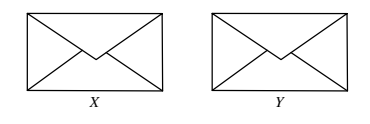
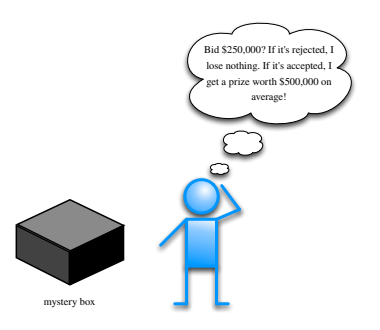
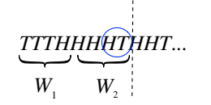
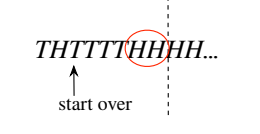
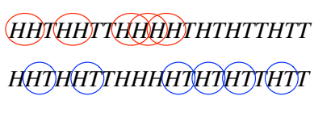
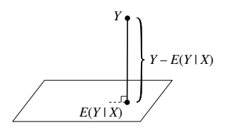
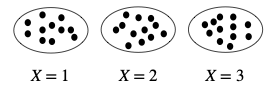
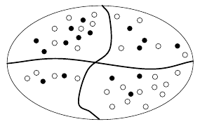
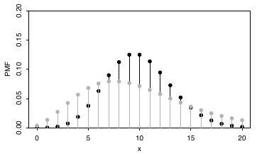
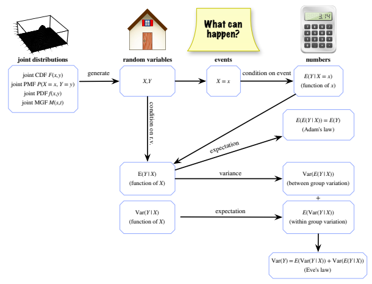

9 조건부기댓값
앞 장들을 읽었다면 조건부기댓값이 무엇인지 이미 알고 있다. 조건부확률을 사용하는 기댓값이다. 조건부확률이 필요한 이유와 비슷한 이유로 이 개념은 필수적이다.
- 조건부기댓값은 기댓값을 계산하는 강력한 도구이다. 알면 좋을 것을 조건으로 삼거나 첫 단계 분석 같은 전략을 이용하면 복잡한 기댓값 문제를 더 간단한 부분으로 나눌 수 있는 경우가 많다.
- 조건부기댓값은 그 자체로 중요한 양이며, 현재 이용 가능한 증거를 바탕으로 미지의 값을 예측하거나 추정할 수 있게 한다. 예를 들어 통계학에서는 설명변수(푼 연습문제 수나 직업훈련 프로그램 등록 여부 등)를 바탕으로 반응변수(시험 점수나 소득 등)를 예측하고자 하는 경우가 많다.
조건부기댓값에는 서로 다르지만 밀접하게 연결된 두 개념이 있다.
- 사건이 주어진 조건부기댓값 \(E(Y\mid A)\): \(Y\)를 확률변수, \(A\)를 사건이라 하자. \(A\)가 발생했음을 알았을 때 갱신된 \(Y\)의 기댓값을 \(E(Y\mid A)\)로 나타내며, \(E(Y)\)와 비슷하게 계산하되 \(A\)가 주어진 조건부확률을 사용한다.
- 확률변수가 주어진 조건부기댓값 \(E(Y\mid X)\): \(X,Y\)가 모두 확률변수일 때 \(E(Y\mid X)\)를 어떻게 정의할지는 더 미묘한 문제이다. 직관적으로 \(E(Y\mid X)\)는 \(X\)에서 얻을 수 있는 정보만을 사용하여 \(Y\)를 가장 잘 예측하는 확률변수이다.
이 장에서는 두 형태의 조건부기댓값에 대한 정의, 성질, 직관과 응용을 살펴본다.
9.1 사건이 주어진 조건부기댓값
이산확률변수 \(Y\)의 기댓값 \(E(Y)\)는 가능한 값들의 가중평균이며 가중치는 확률질량함숫값 \(P(Y=y)\)이다. 사건 \(A\)가 발생했음을 알게 된 후에는 이 새로운 정보를 반영해 갱신된 가중치를 사용하고자 한다. \(E(Y\mid A)\)의 정의는 확률 \(P(Y=y)\)를 조건부확률 \(P(Y=y\mid A)\)로 바꾸기만 하면 된다.
마찬가지로 \(Y\)가 연속형이면 \(E(Y)\)는 여전히 \(Y\)의 가능한 값들의 가중평균이지만 합 대신 적분을 쓰고 확률질량함숫값 대신 확률밀도함숫값 \(f(y)\)를 쓴다. \(A\)가 발생했음을 알게 되면 \(f(y)\)를 조건부 확률밀도함수 \(f(y\mid A)\)로 바꾸어 \(Y\)의 기댓값을 갱신한다.
정의 9.1.1 (사건이 주어진 조건부기댓값). \(A\)를 확률이 양수인 사건이라 하자. \(Y\)가 이산확률변수이면 \(A\)가 주어졌을 때 \(Y\)의 조건부기댓값은
\[E(Y\mid A)=\sum_y yP(Y=y\mid A)\]
이며 합은 \(Y\)의 지지집합에 걸쳐 취한다. \(Y\)가 확률밀도함수 \(f\)를 갖는 연속확률변수이면
\[E(Y\mid A)=\int_{-\infty}^{\infty}yf(y\mid A)\,dy,\]
여기서 조건부 확률밀도함수 \(f(y\mid A)\)는 조건부 누적분포함수 \(F(y\mid A)=P(Y\le y\mid A)\)의 도함수로 정의되며, 베이즈 정리의 혼합형을 이용해 다음과 같이 계산할 수도 있다.1
\[f(y\mid A)=\frac{P(A\mid Y=y)f(y)}{P(A)}.\]
직관 9.1.2. \(E(Y\mid A)\)에 대한 직관을 얻기 위해 시뮬레이션으로 근사해 보자. 또는 같은 실험을 여러 번 반복하는 빈도주의적 관점에서 생각해도 된다. \(Y\)가 수치적으로 요약하는 실험을 \(n\)번 반복한다고 상상하자. 그러면 \(Y\)의 값 \(y_1,\ldots,y_n\)을 얻게 되고
\[E(Y)\approx\frac1n\sum_{j=1}^n y_j\]
으로 근사할 수 있다. \(E(Y\mid A)\)를 근사하려면 \(A\)가 발생한 반복들로 제한하여 그때의 \(Y\) 값들만 평균한다. 이는 다음과 같이 쓸 수 있다.
\[E(Y\mid A)\approx\frac{\sum_{j=1}^n y_jI_j}{\sum_{j=1}^n I_j},\]
여기서 \(I_j\)는 \(j\)번째 반복에서 \(A\)가 발생한 사건의 지시확률변수이다. 시뮬레이션에서 \(A\)가 전혀 발생하지 않으면 이 값은 정의되지 않는다. 그러한 경우 ‘\(A\)가 발생한’ 상황이 어떤지 알려 주는 시뮬레이션 자료가 전혀 없으므로 이는 납득할 만하다. \(A\)가 여러 번 발생하도록 \(n\)을 충분히 크게 잡고 싶다. \(A\)가 희귀 사건이라면 \(E(Y\mid A)\)를 근사하기 위해 더 정교한 기법이 필요할 수도 있다.
하지만 원리는 단순하다. \(E(Y\mid A)\)는 \(A\)가 발생한 많은 시뮬레이션 실행에서 얻은 \(Y\)의 평균으로 근사된다. \(\square\)
주의 9.1.3. 조건부기댓값과 무조건부기댓값을 혼동하는 것은 위험한 실수이다. 더 일반적으로, 무엇을 조건으로 삼아야 하고 무엇을 실제로 조건으로 삼고 있는지 주의 깊게 추적하지 않으면 재앙을 초래할 수 있다.
앞의 주의가 생사를 가르는 예로 기대수명을 생각해 보자.
예제 9.1.4 (기대수명). 프레드는 30세이며 자기 나라의 평균 기대수명이 80세라는 말을 듣는다. 그렇다면 앞으로 평균 50년을 더 살 것이라고 결론 내려야 할까? 그렇지 않다. 그가 이미 30세까지 살았다는 사실은 반드시 조건으로 삼아야 하는 중요한 정보이다. 프레드의 수명을 \(T\)라 하면 다음과 같은 반가운 소식이 있다.2
\[E(T)<E(T\mid T\ge30).\]
왼쪽은 출생 시점의 프레드의 기대수명으로, 그가 태어났다는 사실을 암묵적으로 조건으로 삼고 있다. 오른쪽은 프레드가 30세에 이르렀다는 조건 아래에서의 기대수명이다.
더 어려운 질문은 \(E(T)\)의 적절한 추정치를 어떻게 정할 것인가이다. 그저 나라 전체의 평균인 80세를 쓰면 될까? 거의 모든 나라에서 여성의 평균 기대수명이 남성보다 길므로, 프레드가 남성이라는 사실을 조건으로 삼는 것이 타당하다. 하지만 그가 태어난 도시도 조건으로 삼아야 할까? 부모의 인종이나 경제적 정보, 또는 태어난 시간대도 조건으로 삼아야 할까? 직관적으로는 프레드에게 정확하면서도 관련 있는 추정치를 원한다. 그러나 프레드의 특징을 더 많이 조건으로 삼을수록 기대수명을 추정하는 자료로 쓸 수 있는, 그 특징에 부합하는 사람 수가 줄어든다는 상충관계가 있다.
이제 미국에 관한 구체적인 수치를 살펴보자. 사회보장국의 한 연구는 1900년부터 2000년 사이 미국의 출생 시 평균 기대수명이 남성의 경우 46세에서 74세로, 여성의 경우 49세에서 79세로 늘었다고 추정했다. 엄청난 증가이다! 그러나 이 증가의 상당 부분은 아동 사망률의 감소 때문이다. 1900년에 30세였던 사람의 평균 잔여 수명은 남성이 35년, 여성이 36년이었다. 2000년의 대응 수치는 남성 46년, 여성 50년이었다.
이러한 추정치를 얻는 데는 미묘한 통계적 문제가 있다. 예를 들어 적어도 2100년까지 기다리지 않고 2000년에 태어난 사람의 기대수명을 어떻게 추정했을까? 생존분포의 추정은 생물통계학과 보험계리학에서 매우 중요한 주제이다. \(\square\)
전체 확률의 법칙을 이용하면 표본공간을 조각으로 나누고 각 조각에서 조건부확률을 계산하여 무조건부확률을 구할 수 있다. 같은 생각을 무조건부기댓값을 구하는 데도 쓸 수 있다.
정리 9.1.5 (전체 기댓값의 법칙). \(A_1,\ldots,A_n\)을 표본공간의 분할로서 모든 \(i\)에 대해 \(P(A_i)>0\)이라 하고 \(Y\)를 이 표본공간의 확률변수라 하자. 그러면
\[E(Y)=\sum_{i=1}^n E(Y\mid A_i)P(A_i).\]
사실 근본적인 연결에 따라 모든 확률은 기댓값이므로 전체 확률의 법칙은 전체 기댓값의 법칙의 특수한 경우이다. 이를 보려면 사건 \(B\)의 지시확률변수 \(Y=I_B\)를 취한다. 그러면 위 정리는
\[P(B)=E(I_B)=\sum_{i=1}^n E(I_B\mid A_i)P(A_i)=\sum_{i=1}^nP(B\mid A_i)P(A_i)\]
를 뜻하며, 이것이 바로 전체 확률의 법칙이다. 전체 기댓값의 법칙은 다시 아담의 법칙이라는 중요한 결과(정리 9.3.7)의 특수한 경우이므로 아직 증명하지 않겠다.
알면 좋을 것을 조건으로 삼아 무조건부기댓값을 조건부기댓값들로 분해하는 흥미로운 예가 많다. 먼저 주의 깊게 조건을 삼고 정당한 근거 없이 정보를 버리지 않는 것이 얼마나 중요한지 보여 주는 두 가지 경고 이야기로 시작한다.
예제 9.1.6 (두 봉투 역설). 낯선 사람이 겉보기에 똑같고 봉인된 봉투 두 개를 내놓는다. 각 봉투에는 양의 금액이 적힌 수표가 들어 있다. 한 봉투에 다른 봉투의 정확히 두 배가 들어 있다는 말을 들었다. 어느 봉투든 고를 수 있다면 왼쪽과 오른쪽 중 어느 쪽을 선호하겠는가? 각 봉투에 든 금액의 기댓값은 유한하다고 가정하자. 현실 세계에서는 분명 타당한 가정이다!

풀이. 왼쪽과 오른쪽 봉투에 든 금액을 각각 \(X,Y\)라 하자. 대칭성에 따라 어느 한 봉투를 다른 봉투보다 선호할 이유가 없다. 낯선 사람이 왼손잡이이고 왼손잡이는 더 많은 돈을 왼쪽에 놓기 좋아한다는 사전 정보는 없다고 가정한다. 대칭성에 의해 \(E(X)=E(Y)\)라고 결론 내리면 어느 봉투를 받든 상관없어 보인다.
그러나 봉투 안에 무엇이 있는지 상상하다 보면 다른 논증이 떠오른다. 왼쪽 봉투에 100달러가 들어 있다고 하자. 그러면 오른쪽 봉투에는 50달러 또는 200달러가 있다. 50과 200의 평균은 125달러이므로 오른쪽 봉투가 더 좋아 보인다. 하지만 여기서 100달러라는 값에 특별한 점은 없었다. 왼쪽 봉투의 금액이 어떤 값 \(x\)이든 \(2x\)와 \(x/2\)의 평균은 \(x\)보다 크므로 오른쪽 봉투가 더 좋아 보인다. 그런데 이는 대칭성 논증에 모순될 뿐 아니라 같은 논리를 오른쪽 봉투에서 출발해 적용하면 영원히 이쪽저쪽으로 바꾸게 되므로 이상하다!
무슨 일이 일어나는지 보기 위해 이 논증을 형식화해 보자. 같은 확률로 \(Y=2X\) 또는 \(Y=X/2\)이다. 정리 9.1.5에 의해
\[E(Y)=E(Y\mid Y=2X)\cdot\frac12+E(Y\mid Y=X/2)\cdot\frac12.\]
그러면 다음과 같다고 생각하기 쉽다.
\[E(2X)\cdot\frac12+E(X/2)\cdot\frac12=\frac54E(X).\]
이는 왼쪽 봉투에서 오른쪽으로 바꾸면 25%의 이익을 얻는다는 뜻처럼 보인다. 그러나 이 계산에는 큰 실수가 있다. \(E(Y\mid Y=2X)=E(2X\mid Y=2X)\)이지만, \(Y\)에 \(2X\)를 대입한 뒤 \(Y=2X\)라는 조건을 없앨 정당한 근거가 없다.
달리 말해 \(I\)를 사건 \(Y=2X\)의 지시확률변수라 하면 \(E(Y\mid Y=2X)=E(2X\mid I=1)\)이다. \(X\)가 \(I\)와 독립임을 안다면 \(I=1\)이라는 조건을 없앨 수 있다. 하지만 실제로는 \(X\)와 \(I\)가 독립일 수 없음을 방금 증명했다. 독립이라면 역설이 생기기 때문이다! 놀랍게도 \(X\)를 관찰하면 \(X\)가 더 큰 값인지 작은 값인지에 대한 정보를 얻는다. \(X\)가 아주 크다는 것을 알면 \(X\)가 \(Y\)보다 크다고 짐작할 수 있겠지만, 무엇을 아주 크다고 볼까? \(10^{100}\)에 비하면 아주 작은 \(10^{12}\)는 아주 큰 수인가? 두 봉투 역설에 따르면 \(X\)의 분포가 무엇이든 그 분포에 상대적으로 ‘아주 크다’를 합리적으로 정의하는 방법이 있다.
연습문제 8에서는 두 봉투의 금액이 독립이고 동일한 분포를 따르는 확률변수인 관련 문제를 살펴본다. 한 봉투의 안을 살펴본 후 바꿀지를 결정할 수 있다면 더 좋은 봉투를 얻을 확률이 50%보다 높은 전략이 있음을 보일 것이다! \(\square\)
다음 예는 모든 정보를 조건으로 삼는 것의 중요성을 생생하게 보여 준다. 여기서 드러나는 현상은 무엇을 살지와 어떻게 투자할지에 관한 많은 실제 결정에서 나타난다.
예제 9.1.7 (정체를 모르는 상품). 또 다른 낯선 사람이 다가와 정체를 모르는 상품이 든 상자에 입찰할 기회를 준다! 상품의 가치는 전혀 알려져 있지 않으며, 다만 적어도 0달러이고 최대 100만 달러라는 것만 안다. 따라서 상품의 실제 가치 \(V\)는 백만 달러 단위로 측정할 때 \([0,1]\) 위의 균등분포를 따른다고 본다.
입찰액 \(b\)(백만 달러 단위)는 원하는 대로 정할 수 있다. 상품의 가치보다 훨씬 싼 값에 얻을 기회도 있지만, 너무 많이 입찰하면 손해를 볼 수도 있다. 구체적으로 \(b<2V/3\)이면 입찰이 거절되고 얻거나 잃는 것이 없다. \(b\ge2V/3\)이면 입찰이 수락되며 순이익은 \(V-b\)이다. 가치가 \(V\)인 상품을 얻기 위해 \(b\)를 지불하기 때문이다. 기대이익을 최대화하는 최적 입찰액 \(b\)는 얼마인가?
풀이. 입찰액 \(b\ge0\)은 미리 정한 상수여야 한다. \(V\)는 알려져 있지 않으므로 \(V\)를 바탕으로 정할 수 없다! 기대이익 \(W\)를 구하기 위해 입찰 수락 여부를 조건으로 삼자.

입찰이 수락되면 이익은 \(V-b\), 거절되면 0이므로
\[ \begin{aligned} E(W)&=E(W\mid b\ge2V/3)P(b\ge2V/3)+E(W\mid b<2V/3)P(b<2V/3)\\ &=E(V-b\mid b\ge2V/3)P(b\ge2V/3)+0\\ &=(E(V\mid V\le3b/2)-b)P(V\le3b/2). \end{aligned} \]
\(b\ge2/3\)이면 사건 \(V\le3b/2\)의 확률은 1이므로 오른쪽은 \(1/2-b\)이고 음수이다. 이제 \(b<2/3\)이라 하자. 그러면 \(V\le3b/2\)의 확률은 \(3b/2\)이다. \(V\le3b/2\)가 주어졌을 때 \(V\)의 조건부분포는 \([0,3b/2]\) 위의 균등분포이다. 따라서3
\[E(W)=(E(V\mid V\le3b/2)-b)P(V\le3b/2)=\left(\frac{3b}{4}-b\right)\frac{3b}{2}=-\frac{3b^2}{8}.\]
위 식은 \(b=0\)인 경우를 제외하고 음수이므로 최적 입찰액은 0이다. 이 게임을 하지 말아야 한다!
다른 방법으로 다음 세 사건 중 어느 것이 발생하는지를 조건으로 삼을 수 있다. \(A=\{V<b/2\}\), \(B=\{b/2\le V\le3b/2\}\), \(C=\{V>3b/2\}\)이다. 그러면
\[ \begin{aligned} E(W\mid A)&=E(V-b\mid A)<E(b/2-b\mid A)=-b/2\le0,\\ E(W\mid B)&=E\left(\frac{b/2+3b/2}{2}-b\mid B\right)=0,\\ E(W\mid C)&=0, \end{aligned} \]
이므로 \(b=0\)으로 정하고 떠나면 된다.4
이 이야기의 교훈은 모든 정보를 조건으로 삼으라는 것이다. 위 계산에서는 \(E(V)=1/2\) 대신 \(E(V\mid V\le3b/2)\)를 사용하는 것이 중요하다. 입찰이 수락되었다는 사실을 알면 정체를 모르는 상품의 가치에 관한 정보를 얻게 되므로 이 정보를 버려서는 안 된다. 이 문제는 이른바 승자의 저주와 관련이 있다. 승자의 저주는 정보가 불완전한 경매에서 낙찰자가 자신이 기대하는 것보다 적은 이익을 얻는 경향이 있다는 것이다. 물론 확률을 이해한다면 그렇지 않을 수 있다! 많은 상황에서 입찰에 이겼다는 조건 아래 입찰한 물건의 기댓값은 원래 생각했던 무조건부기댓값보다 작기 때문이다. \(b\ge2/3\)이면 \(V\le1\)임을 미리 알므로 \(V\le3b/2\)를 조건으로 삼아도 아무 변화가 없지만, 그런 입찰액은 터무니없이 높다. \(0<b<2/3\)이면 입찰이 수락되었다는 사실을 알게 됨으로써 기댓값이 낮아진다.
\[E(V\mid V\le3b/2)<E(V).\qquad\square\]
나머지 예제에서는 첫 단계 분석으로 무조건부기댓값을 계산한다. 먼저 4장에서 약속한 대로 첫 단계 분석을 이용해 기하분포의 기댓값을 유도하자.
예제 9.1.8 (기하분포의 기댓값 다시 보기). \(X\sim\operatorname{Geom}(p)\)라 하자. \(X\)를 앞면 확률이 \(p\)인 동전 던지기 수열에서 첫 앞면이 나오기 전 뒷면의 횟수로 해석한다. \(E(X)\)를 구하기 위해 첫 던지기의 결과를 조건으로 삼는다. 앞면이면 \(X\)는 0이고 끝난다. 뒷면이면 한 번을 허비했고 무기억성에 의해 처음 상태로 돌아간다. 따라서 \(q=1-p\)일 때5
\[E(X)=E(X\mid\text{첫 던지기 H})p+E(X\mid\text{첫 던지기 T})q=0\cdot p+(1+E(X))q,\]
이며 이를 풀면 \(E(X)=q/p\)이다. \(\square\)
다음 예에서는 두 단계에 걸친 조건부 계산을 사용하여 더 복잡한 패턴의 기대 대기시간을 유도한다.
예제 9.1.9 (HH와 HT가 나올 때까지의 시간). 공정한 동전을 반복해서 던진다. 패턴 HT가 처음 나타날 때까지 던지는 횟수의 기댓값은 얼마인가? HH가 처음 나타날 때까지는 어떠한가?
풀이. HT가 나타날 때까지 던지는 횟수를 \(W_{HT}\)라 하자. 그림 9.3에서 보듯 \(W_{HT}\)는 첫 앞면이 나올 때까지의 대기시간 \(W_1\)과 그 첫 앞면 이후 첫 뒷면까지의 추가 대기시간 \(W_2\)의 합이다. 첫 성공 분포의 이야기에 따라 \(W_1,W_2\)는 i.i.d. \(\operatorname{FS}(1/2)\)이므로 \(E(W_1)=E(W_2)=2\)이고 \(E(W_{HT})=4\)이다.

HH의 기대 대기시간 \(E(W_{HH})\)를 구하는 것은 더 복잡하다. \(E(W_{HT})\)와 같은 논리를 적용할 수 없다. 그림 9.4에서 보듯 첫 앞면 바로 다음이 뒷면이면 그동안의 진전이 사라지고 처음부터 다시 시작해야 한다. 하지만 이는 문제를 푸는 우리에게는 진전이다. 시스템이 초기화될 수 있다는 사실이 첫 단계 분석이라는 전략을 시사하기 때문이다. 첫 던지기의 결과를 조건으로 삼자.
\[E(W_{HH})=E(W_{HH}\mid\text{첫 던지기 H})\frac12+E(W_{HH}\mid\text{첫 던지기 T})\frac12.\]

두 번째 항에 대해서는 무기억성에 의해 \(E(W_{HH}\mid\text{첫 던지기 T})=1+E(W_{HH})\)이다. 첫 번째 항은 두 번째 던지기의 결과를 추가로 조건으로 삼아 계산한다. 두 번째 던지기도 앞면이면 두 번 만에 HH를 얻는다. 뒷면이면 두 번을 허비했고 처음부터 다시 시작해야 한다! 따라서
\[E(W_{HH}\mid\text{첫 던지기 H})=2\cdot\frac12+(2+E(W_{HH}))\cdot\frac12.\]
그러므로
\[E(W_{HH})=\left(2\cdot\frac12+(2+E(W_{HH}))\cdot\frac12\right)\frac12+(1+E(W_{HH}))\frac12.\]
이를 풀면 \(E(W_{HH})=6\)이다.
처음에는 HH의 기대 대기시간이 HT의 기대 대기시간보다 길다는 것이 놀라울 수 있다. 동전을 두 번 던졌을 때 HH와 HT가 나타날 확률이 모두 \(1/4\)이라는 사실과 어떻게 조화시킬 수 있을까? 왜 대칭성에 의해 평균 대기시간이 같지 않을까?
우리는 이 문제를 풀면서 실제로 중요한 비대칭성을 알아차렸다. HT를 기다릴 때는 첫 H를 얻는 순간 사라질 수 없는 부분적인 진전을 이룬다. H 다음에 또 H가 나오면 이전과 같은 상태이고 T가 나오면 끝이기 때문이다. 반면 HH를 기다릴 때는 첫 H를 얻은 후에도 T가 뒤따르면 처음 상태로 돌아갈 수 있다. 이는 HH의 평균 대기시간이 더 길어야 함을 시사한다. 대칭성에 따르면 HH의 평균 대기시간은 TT의 평균 대기시간과 같고, HT의 평균 대기시간은 TH의 평균 대기시간과 같다. 하지만 HH와 HT의 평균 대기시간이 같아야 한다는 뜻은 아니다.
무슨 일이 일어나는지에 대한 직관을 더 얻으려면 그림 9.5처럼 동전을 던진 결과가 길게 이어진 수열을 생각하면 된다. HH의 출현은 서로 겹칠 수 있지만 HT의 출현은 서로 겹치지 않는다는 것을 바로 알아챈다. 예를 들어 HHHHHH에는 HH가 5번 나타나지만 HTHTHT에는 HT가 3번만 나타난다. HH와 HT는 평균적으로 같은 횟수만큼 나타나지만 HH는 때때로 한데 뭉치므로, 이를 보상하기 위해 HH의 평균 대기시간이 HT보다 더 길어야 한다.

관련 문제는 메시지를 압축하는 정보이론과 DNA 서열에서 모티프라고 부르는 반복 패턴을 찾는 유전학에서 나타난다. \(\square\)
이 절의 마지막 예는 알면 좋을 것을 조건으로 삼는 방법을 확률과 기댓값 양쪽에 사용하여 임의보행에 관한 질문을 연구한다.
예제 9.1.10 (정수 위의 임의보행). 죽지 않는 취한 사람이 정수 위를 무작위로 돌아다닌다. 그는 원점에서 시작하고 각 단계에서 이전의 모든 걸음과 독립적으로 같은 확률로 오른쪽이나 왼쪽으로 한 단위 움직인다. \(b\)를 구골플렉스라 하자. 이는 \(10^g\)이고 \(g=10^{100}\)은 구골이다.
이 사람이 처음으로 원점에 돌아오기 전에 \(b\)를 방문할 확률을 간단한 식으로 구하라.
이 사람이 처음으로 원점에 돌아오기 전에 \(b\)를 방문하는 횟수의 기댓값을 구하라.
풀이. (a) 처음으로 원점에 돌아오기 전에 \(b\)를 방문하는 사건을 \(B\), 첫 걸음이 왼쪽인 사건을 \(L\)이라 하자. \(-1\)에서 \(b\)로 가는 모든 경로는 반드시 0을 지나므로 \(P(B\mid L)=0\)이다. \(P(B\mid L^c)\)에 대해서는 참가자 A가 1달러, 참가자 B가 \(b-1\)달러로 시작하고 매 판이 공정한 도박사의 파산 문제와 정확히 같은 상황이다. 그 결과를 적용하면
\[P(B)=P(B\mid L)P(L)+P(B\mid L^c)P(L^c)=\frac1b\cdot\frac12=\frac1{2b}.\]
- 처음 원점으로 돌아오기 전 \(b\)를 방문한 횟수를 \(N\), (a)에서 구한 확률을 \(p=1/(2b)\)라 하자. 그러면
\[E(N)=E(N\mid N=0)P(N=0)+E(N\mid N\ge1)P(N\ge1)=pE(N\mid N\ge1).\]
\(N\ge1\)이 주어졌을 때 \(N\)의 조건부분포는 \(\operatorname{FS}(p)\)이다. 이 사람이 \(b\)에 도달했다면, 대칭성에 의해 \(b\)를 다시 방문하기 전에 원점으로 돌아올 확률이 \(p\)이다. 이를 ‘성공’이라 부르자. 원점으로 돌아오기 전에 \(b\)를 다시 방문할 확률은 \(1-p\)이며 이를 ‘실패’라 부르자. 이 사람이 \(b\)에 있을 때마다 과거와 독립적으로 상황이 같으므로 시행들은 독립이다. 따라서 \(E(N\mid N\ge1)=1/p\)이고
\[E(N)=pE(N\mid N\ge1)=p\cdot\frac1p=1.\]
놀랍게도 이 결과는 \(b\)의 값에 의존하지 않으며, 증명에도 \(p\)의 구체적인 값을 알 필요가 없었다. \(\square\)
9.2 확률변수가 주어졌을 때의 조건부기댓값
이 절에서는 확률변수가 주어졌을 때의 조건부기댓값을 소개한다. 즉 확률변수 \(X\)에 대해 \(E(Y\mid X)\)라고 쓰는 것이 무엇을 뜻하는지 이해하고자 한다. 앞으로 보겠지만 \(E(Y\mid X)\)는 \(X\)를 알게 된다는 가정 아래, 어떤 의미에서 \(Y\)에 대한 최선의 예측인 확률변수이다.
\(E(Y\mid X)\)를 이해하는 열쇠는 먼저 \(E(Y\mid X=x)\)를 이해하는 것이다. \(X=x\)는 사건이므로 \(E(Y\mid X=x)\)는 이 사건이 주어졌을 때 \(Y\)의 조건부기댓값이며, \(X=x\)가 주어졌을 때 \(Y\)의 조건부분포를 이용해 계산할 수 있다.6
\(Y\)가 이산형이면 무조건부 확률질량함수 \(P(Y=y)\) 대신 조건부 확률질량함수 \(P(Y=y\mid X=x)\)를 사용한다.
\[E(Y\mid X=x)=\sum_y yP(Y=y\mid X=x).\]
마찬가지로 \(Y\)가 연속형이고 조건부 확률밀도함수 \(f_{Y\mid X}(y\mid x)\)가 존재하면 무조건부 확률밀도함수 대신 이를 사용한다. \(Y\)의 주변분포가 연속형이라는 사실만으로 조건부 밀도가 반드시 존재하는 것은 아니다.
\[E(Y\mid X=x)=\int_{-\infty}^{\infty}y f_{Y\mid X}(y\mid x)\,dy.\]
\(y\)에 대해 합하거나 적분하므로 \(E(Y\mid X=x)\)는 \(x\)만의 함수라는 점에 주목하자. 이 함수에 \(g\)와 같은 이름을 붙일 수 있다. 즉 \(g(x)=E(Y\mid X=x)\)라 하자. 함수 \(g(x)\)의 형태를 구한 다음 \(x\)에 \(X\)를 대입하여 얻는 확률변수를 \(E(Y\mid X)\)로 정의한다.
정의 9.2.1 (확률변수가 주어졌을 때의 조건부기댓값). \(g(x)=E(Y\mid X=x)\)라 하자. 그러면 \(X\)가 주어졌을 때 \(Y\)의 조건부기댓값은 \(g(X)\)로 정의하고 \(E(Y\mid X)\)로 나타낸다. 다시 말해 실험을 수행한 후 \(X\)가 \(x\)로 결정되면 \(E(Y\mid X)\)는 \(g(x)\)로 결정된다.
주의 9.2.2. 이 정의의 표기는 때때로 혼란을 일으킨다. “\(g(x)=E(Y\mid X=x)\)이므로 \(g(X)=E(Y\mid X=X)\)이고, \(X=X\)는 언제나 참이므로 이는 \(E(Y)\)와 같다”는 뜻이 아니다. 그 대신 먼저 함수 \(g(x)\)를 계산하고 그 후 \(x\)에 \(X\)를 대입해야 한다. 예를 들어 \(g(x)=x^2\)이면 \(g(X)=X^2\)이다. 균등분포의 보편성에서 \(F(X)\)의 의미에 관한 주의 5.3.2도 이와 비슷한 흔한 실수이다.
주의 9.2.3. 정의에 따라 \(E(Y\mid X)\)는 \(X\)의 함수이므로 확률변수이다. 그렇다고 \(E(Y\mid X)\)가 상수인 예가 없다는 뜻은 아니다. 상수도 퇴화 확률변수이며 \(X\)의 상수 함수이다. 예를 들어 \(X\)와 \(Y\)가 독립이면 \(E(Y\mid X)=E(Y)\)이고, 이는 상수이다. 따라서 확률변수 \(E(Y\mid X)\)의 평균과 분산인 \(E(E(Y\mid X))\)나 \(\operatorname{Var}(E(Y\mid X))\) 같은 양을 계산하는 것은 의미가 있다. 조건부기댓값을 다룰 때는 범주 오류에 쉽게 빠질 수 있으므로 \(E(Y\mid A)\) 형태의 조건부기댓값은 수인 반면 \(E(Y\mid X)\) 형태의 조건부기댓값은 확률변수라는 점을 기억해야 한다.
다음은 조건부기댓값을 계산하는 간단한 예들이다. 두 예 모두 더 직접적인 방법을 사용할 수 있으므로 \(E(Y\mid X=x)\)를 구하기 위해 합이나 적분을 계산할 필요가 없다.
예제 9.2.4. 길이가 1인 막대를 균등하게 무작위로 고른 지점 \(X\)에서 부러뜨린다. \(X=x\)가 주어졌을 때 구간 \([0,x]\)에서 두 번째로 부러뜨릴 지점 \(Y\)를 균등하게 고른다. \(E(Y\mid X)\)와 그 평균, 분산을 구하라.
풀이. 실험의 설명에 따라 \(X\sim\operatorname{Unif}(0,1)\)이고 \(Y\mid X=x\sim\operatorname{Unif}(0,x)\)이다. 그러면 \(E(Y\mid X=x)=x/2\)이므로 \(x\)에 \(X\)를 대입하면
\[E(Y\mid X)=X/2.\]
\(E(Y\mid X)\)의 기댓값은
\[E(E(Y\mid X))=E(X/2)=1/4.\]
다음 절에서는 조건부기댓값의 일반적인 성질로 \(E(E(Y\mid X))=E(Y)\)임을 보일 것이다. 따라서 \(E(Y)=1/4\)임도 알 수 있다. \(E(Y\mid X)\)의 분산은
\[\operatorname{Var}(E(Y\mid X))=\operatorname{Var}(X/2)=1/48.\qquad\square\]
예제 9.2.5. \(X,Y\)가 서로 독립이고 동일한 \(\operatorname{Expo}(\lambda)\) 분포를 따를 때 \(E(\max(X,Y)\mid\min(X,Y))\)를 구하라.
풀이. \(M=\max(X,Y)\), \(L=\min(X,Y)\)라 하자. 무기억성에 따라 \(M-L\)은 \(L\)과 독립이고 \(M-L\sim\operatorname{Expo}(\lambda)\)이다. 예제 7.3.6을 보라. 따라서
\[ E(M\mid L=l)=E(L\mid L=l)+E(M-L\mid L=l) =l+E(M-L)=l+\frac1\lambda, \]
그러므로 \(E(M\mid L)=L+1/\lambda\)이다. \(\square\)
9.3 조건부기댓값의 성질
조건부기댓값에는 매우 유용한 성질들이 있다.
- 독립인 것의 제거: \(X\)와 \(Y\)가 독립이면 \(E(Y\mid X)=E(Y)\)이다.
- 알려진 것의 추출: 임의의 함수 \(h\)에 대해 \(E(h(X)Y\mid X)=h(X)E(Y\mid X)\)이다.
- 선형성: \(E(Y_1+Y_2\mid X)=E(Y_1\mid X)+E(Y_2\mid X)\)이고, 상수 \(c\)에 대해 \(E(cY\mid X)=cE(Y\mid X)\)이다. 뒤의 식은 알려진 것의 추출의 특수한 경우이다.
- 아담의 법칙: \(E(E(Y\mid X))=E(Y)\)이다.
- 사영 해석: \(X\)를 이용해 \(Y\)를 예측할 때의 잔차라고 부르는 확률변수 \(Y-E(Y\mid X)\)는 임의의 함수 \(h\)에 대해 \(h(X)\)와 비상관이다.7
이제 각 성질을 하나씩 살펴보자.
정리 9.3.1 (독립인 것의 제거). \(X\)와 \(Y\)가 독립이면 \(E(Y\mid X)=E(Y)\)이다.
독립이면 모든 \(x\)에 대해 \(E(Y\mid X=x)=E(Y)\)이므로 \(E(Y\mid X)=E(Y)\)이다.8 직관적으로 \(X\)가 \(Y\)에 대한 정보를 전혀 제공하지 않는다면, \(X\)를 알게 되더라도 \(Y\)에 대한 최선의 추측은 여전히 무조건부 평균 \(E(Y)\)이다. 그러나 그 역은 거짓이다. 아래 예제 9.3.3이 반례를 제시한다.
정리 9.3.2 (알려진 것의 추출). 임의의 함수 \(h\)에 대해
\[E(h(X)Y\mid X)=h(X)E(Y\mid X).\]
직관적으로 \(X\)가 주어졌을 때 기댓값을 구한다는 것은 \(X\)를 이미 알려진 상수로 결정된 것처럼 취급한다는 뜻이다. 그러면 \(X\)의 임의의 함수, 예를 들어 \(h(X)\)도 \(X\)를 조건으로 삼는 동안 알려진 상수처럼 작용한다. 알려진 것의 추출은 무조건부 사실 \(E(cY)=cE(Y)\)에 대응하는 조건부 성질이다. 차이점은 \(E(cY)=cE(Y)\)가 두 수가 같다고 주장하는 반면, 알려진 것의 추출은 두 확률변수가 같다고 주장한다는 것이다.
예제 9.3.3. \(Z\sim\mathcal N(0,1)\)이고 \(Y=Z^2\)이라 하자. \(E(Y\mid Z)\)와 \(E(Z\mid Y)\)를 구하라.
풀이. \(Y\)는 \(Z\)의 함수이므로 알려진 것의 추출에 의해 \(E(Y\mid Z)=E(Z^2\mid Z)=Z^2\)이다. \(E(Z\mid Y)\)를 구하기 위해 \(y>0\)에서 \(Y=y\)라는 조건 아래의 조건부분포를 생각하자. 표준정규분포의 대칭성에 의해 이 조건부분포는 \(Z=\sqrt y\)와 \(Z=-\sqrt y\)에 같은 확률을 부여한다. 따라서 \(E(Z\mid Y=y)=0\)이고 \(E(Z\mid Y)=0\)이다.
이 경우 \(Y\)는 \(Z\)가 취할 수 있는 값을 단 두 개로 좁혀 주므로 \(Z\)에 대한 많은 정보를 제공하지만, \(Z\)의 부호가 아니라 크기만 알려 준다. 이 때문에 \(Z\)와 \(Y\)가 종속인데도 \(E(Z\mid Y)=E(Z)\)이다. 이 예제는 정리 9.3.1의 역이 거짓임을 보여 준다. \(\square\)
정리 9.3.4 (선형성).
\[E(Y_1+Y_2\mid X)=E(Y_1\mid X)+E(Y_2\mid X).\]
이 결과는 무조건부 사실 \(E(Y_1+Y_2)=E(Y_1)+E(Y_2)\)에 대응하는 조건부 성질이며, 조건부확률이 확률이기 때문에 성립한다.
주의 9.3.5. “\(E(Y\mid X_1+X_2)=E(Y\mid X_1)+E(Y\mid X_2)\)”라고 쓰는 것은 잘못이다. 선형성은 조건부 기호의 오른쪽이 아니라 왼쪽에 적용된다!
예제 9.3.6. \(X_1,\ldots,X_n\)이 i.i.d.이고 \(S_n=X_1+\cdots+X_n\)이라 하자. \(E(X_1\mid S_n)\)을 구하라.
풀이. 대칭성에 의해
\[E(X_1\mid S_n)=E(X_2\mid S_n)=\cdots=E(X_n\mid S_n),\]
선형성에 의해
\[E(X_1\mid S_n)+\cdots+E(X_n\mid S_n)=E(S_n\mid S_n)=S_n.\]
따라서
\[E(X_1\mid S_n)=S_n/n=\bar X_n,\]
즉 \(X_j\)들의 표본평균이다. 이는 직관적인 결과이다. i.i.d. 확률변수 \(X_1,X_2\)가 두 개 있고 \(X_1+X_2=10\)이라는 것을 알게 되었다면 \(X_1\)을 전체의 절반인 5로 추측하는 것이 타당하다. 마찬가지로 i.i.d. 확률변수가 \(n\)개 있고 그 합을 알게 되면, 그중 어느 하나에 대해서도 최선의 추측은 표본평균이다. \(\square\)
다음 정리는 조건부기댓값과 무조건부기댓값을 연결한다. 이 정리는 전체 기댓값의 법칙, 반복 기댓값의 법칙, 탑 성질 등 여러 이름으로 불린다. 반복 기댓값의 법칙의 영어 약어는 진실로 빛나는 내용에 비해 끔찍하다. 이 책에서는 너무 자주 사용하므로 짧고 기억하기 쉬운 이름을 붙일 만하고, 곧 만날 상보적인 이름을 가진 다른 법칙과 함께 쓰이는 경우가 많기 때문에 아담의 법칙이라고 부른다.
정리 9.3.7 (아담의 법칙). 임의의 확률변수 \(X,Y\)에 대해
\[E(E(Y\mid X))=E(Y).\]
증명. \(X,Y\)가 둘 다 이산형인 경우의 증명을 제시한다. 다른 경우의 증명도 유사하다. \(E(Y\mid X)=g(X)\)라 하자. LOTUS를 적용하고, \(g(x)\)의 정의를 전개해 이중합을 얻은 다음 합의 순서를 바꾸면
\[ \begin{aligned} E(g(X))&=\sum_x g(x)P(X=x)\\ &=\sum_x\left(\sum_y yP(Y=y\mid X=x)\right)P(X=x)\\ &=\sum_x\sum_y yP(X=x)P(Y=y\mid X=x)\\ &=\sum_y y\sum_x P(X=x,Y=y)\\ &=\sum_y yP(Y=y)=E(Y). \end{aligned} \]
\(\blacksquare\)
아담의 법칙은 전체 기댓값의 법칙(정리 9.1.5)을 더 간결하고 일반적으로 나타낸 것이다. \(X\)가 이산형일 때 다음 두 식은 같은 뜻이다.
\[E(Y)=\sum_x E(Y\mid X=x)P(X=x),\qquad E(Y)=E(E(Y\mid X)).\]
\(E(Y\mid X=x)=g(x)\)라 하면
\[E(E(Y\mid X))=E(g(X))=\sum_xg(x)P(X=x)=\sum_xE(Y\mid X=x)P(X=x)\]
이기 때문이다.
아담의 법칙은 알면 좋을 확률변수 \(X\)를 조건으로 삼아 기댓값 \(E(Y)\)를 구하는 강력한 전략을 제공한다. 먼저 \(X\)를 아는 것으로 취급하여 \(E(Y\mid X)\)를 구한 다음, \(E(Y\mid X)\)의 기댓값을 구한다. 이 장의 뒷부분에서 이에 대한 여러 예를 볼 것이다.
2장에서 살펴보았듯이 베이즈 정리와 전체 확률의 법칙에는 추가 조건이 있는 형태가 있다. 이와 마찬가지로 아담의 법칙에도 추가 조건이 있는 형태가 있다.
정리 9.3.8 (추가 조건이 있는 아담의 법칙). 임의의 확률변수 \(X,Y,Z\)에 대해
\[E(E(Y\mid X,Z)\mid Z)=E(Y\mid Z).\]
위 식은 아담의 법칙의 모든 곳에 \(Z\)라는 추가 조건을 넣은 것이다. 조건부확률은 확률이므로 이 식이 성립한다. 따라서 아담의 법칙을 무조건부기댓값과 조건부기댓값을 구하는 데 모두 사용할 수 있다.
아담의 법칙을 이용하면 앞에서 열거한 조건부기댓값의 성질 중 마지막 항목도 증명할 수 있다.
정리 9.3.9 (사영 해석). 임의의 함수 \(h\)에 대해 확률변수 \(Y-E(Y\mid X)\)는 \(h(X)\)와 비상관이다. 동등하게,
\[E\bigl((Y-E(Y\mid X))h(X)\bigr)=0.\]
선형성과 아담의 법칙에 의해 \(E(Y-E(Y\mid X))=0\)이므로 두 진술은 동등하다.
증명.
\[ \begin{aligned} E\bigl((Y-E(Y\mid X))h(X)\bigr) &=E(h(X)Y)-E(h(X)E(Y\mid X))\\ &=E(h(X)Y)-E(E(h(X)Y\mid X)). \end{aligned} \]
두 번째 등식에서는 정리 9.3.2를 사용했다. 여기서는 안쪽 기댓값에 ‘알려진 것을 다시 집어넣은’ 셈이다. 아담의 법칙에 의해 두 번째 항은 \(E(h(X)Y)\)와 같다. \(\blacksquare\)

기하학적 관점에서 정리 9.3.9를 그림 9.6처럼 시각화할 수 있다. 아래에서 설명하는 어떤 의미에서 \(E(Y\mid X)\)는 \(Y\)에 가장 가까운 \(X\)의 함수이다. 그래서 \(E(Y\mid X)\)를 \(Y\)를 \(X\)의 모든 함수로 이루어진 공간에 사영한 것이라고 말한다. 그림에서 \(Y\)로부터 \(E(Y\mid X)\)까지의 ‘선’은 ‘평면’에 직교한다. 즉 수직이다. \(Y\)에서 \(E(Y\mid X)\)로 가는 다른 모든 경로가 더 길기 때문이다. 이 직교성이 정리 9.3.9의 기하학적 해석임을 알 수 있다.
이 관점의 자세한 내용은 다음 절에 나와 있다. 다음 절은 선형대수 지식이 필요하므로 별표가 붙어 있다. 하지만 선형대수를 깊이 살펴보지 않더라도 사영 그림은 유용한 직관을 제공한다. 앞에서 언급했듯 \(E(Y\mid X)\)는 \(X\)에 근거한 \(Y\)의 예측으로 생각할 수 있다. 이는 통계학에서 매우 흔한 문제이다. 즉 데이터를 바탕으로 미래의 관측값이나 알려지지 않은 모수를 예측하거나 추정하는 문제이다. 조건부기댓값의 사영 해석에 따르면 \(E(Y\mid X)\)는 \(X\)에 근거한 \(Y\)의 최선의 예측량이다. 이때 ‘최선’이란 \(X\)의 함수 중 평균제곱오차, 즉 \(Y\)와 \(Y\)의 예측값 사이 차이의 제곱의 기댓값이 가장 작다는 뜻이다.
예제 9.3.10 (선형회귀). 선형회귀는 통계학에서 자료 분석에 매우 널리 쓰이는 방법이다. 가장 기본적인 형태의 선형회귀 모형은 하나의 설명변수 \(X\)를 이용해 반응변수 \(Y\)를 예측하며, \(Y\)의 조건부기댓값이 \(X\)의 선형함수라고 가정한다.
\[E(Y\mid X)=a+bX.\]
- 이것을 다음과 같이 쓰는 것과 동등함을 보여라.
\[Y=a+bX+\epsilon,\]
여기서 \(\epsilon\)은 \(E(\epsilon\mid X)=0\)을 만족하는 확률변수이며 오차라고 부른다.
- \(E(X),E(Y),\operatorname{Cov}(X,Y),\operatorname{Var}(X)\)를 이용하여 상수 \(a,b\)를 구하라.9
풀이. (a) \(Y=a+bX+\epsilon\)이고 \(E(\epsilon\mid X)=0\)이라 하자. 그러면 선형성에 의해
\[E(Y\mid X)=E(a\mid X)+E(bX\mid X)+E(\epsilon\mid X)=a+bX.\]
반대로 \(E(Y\mid X)=a+bX\)라고 가정하고
\[\epsilon=Y-(a+bX)\]
로 정의하자. 그러면 \(Y=a+bX+\epsilon\)이고
\[E(\epsilon\mid X)=E(Y\mid X)-E(a+bX\mid X)=E(Y\mid X)-(a+bX)=0.\]
- 먼저 아담의 법칙에 따라 양변의 기댓값을 취하면
\[E(Y)=a+bE(X).\]
\(\epsilon\)의 평균은 0이고 \(X\)와 \(\epsilon\)은 비상관이다. 왜냐하면
\[E(\epsilon)=E(E(\epsilon\mid X))=E(0)=0\]
이고,
\[E(\epsilon X)=E(E(\epsilon X\mid X))=E(XE(\epsilon\mid X))=E(0)=0\]
이기 때문이다. \(Y=a+bX+\epsilon\)의 양변과 \(X\)의 공분산을 취하면
\[\operatorname{Cov}(X,Y)=\operatorname{Cov}(X,a)+b\operatorname{Cov}(X,X)+\operatorname{Cov}(X,\epsilon)=b\operatorname{Var}(X).\]
따라서
\[b=\frac{\operatorname{Cov}(X,Y)}{\operatorname{Var}(X)},\qquad a=E(Y)-bE(X)=E(Y)-\frac{\operatorname{Cov}(X,Y)}{\operatorname{Var}(X)}E(X).\qquad\square\]
9.4 *조건부기댓값의 기하학적 해석
이 절에서는 선형대수의 몇 가지 개념을 이용하여 그림 9.6에 제시된 기하학적 관점을 더 자세히 설명한다. 어떤 확률공간 위의 확률변수들 중 분산이 유한한 모든 확률변수로 이루어진 벡터공간을 생각하자. 이 공간의 각 벡터 또는 점은 확률변수이다. 여기서 ‘벡터’는 선형대수에서의 뜻으로 사용하며, 7장의 확률벡터라는 뜻이 아니다. 두 확률변수 \(U,V\)의 내적을 다음과 같이 정의한다.10
\[\langle U,V\rangle=E(UV).\]
이 정의가 내적의 공리들을 만족하려면 확률 1로 같은 두 확률변수를 같은 것으로 취급한다는 약속이 필요하다.
확률변수 \(X\)의 길이의 제곱은
\[\lVert X\rVert^2=\langle X,X\rangle=E(X^2)\]
이고, 두 확률변수 \(U,V\) 사이 거리의 제곱은
\[\lVert U-V\rVert^2=E((U-V)^2)\]
이다. 특히 \(E(U)=E(V)=0\)이면 다음과 같이 해석할 수 있다.
- \(\lVert U\rVert^2=\operatorname{Var}(U)\)이고 \(\lVert U\rVert=\operatorname{SD}(U)\)이다.
- \(\langle U,V\rangle=\operatorname{Cov}(U,V)\)이고, \(U\)와 \(V\) 사이의 ‘각’의 코사인은 \(\operatorname{Corr}(U,V)\)이다.11
- \(U\)와 \(V\)는 비상관일 때, 그리고 그때에만 서로 직교한다. 즉 \(\langle U,V\rangle=0\)이다.
\(E(Y\mid X)\)를 기하학적으로 해석하려면 \(X\)의 함수로 표현할 수 있는, 분산이 유한한 모든 확률변수로 이루어진 공간을 생각하자. 이것은 앞서 본 벡터공간의 부분공간이다. 그림 9.6에서는 \(h(X)\) 꼴의 확률변수로 이루어진 부분공간을 평면으로 나타낸다. \(E(Y\mid X)\)를 얻기 위해 \(Y\)를 그 평면에 사영한다. 그러면 잔차 \(Y-E(Y\mid X)\)는 모든 함수 \(h\)에 대해 \(h(X)\)와 직교하고, \(E(Y\mid X)\)는 \(Y\)를 가장 잘 예측하는 \(X\)의 함수이다. 여기서 ‘가장 잘’이란 \(g(X)=E(Y\mid X)\)를 택할 때 평균제곱오차 \(E((Y-g(X))^2)\)가 최소가 된다는 뜻이다.12
사영으로 해석하면 조건부기댓값의 여러 성질을 생각하는 데 도움이 된다. 예를 들어 \(Y=h(X)\)가 \(X\)의 함수라면 \(Y\) 자체가 이미 평면 위에 있으므로 자기 자신의 사영이다. 이것은 다음이 성립하는 이유를 설명한다.
\[E(h(X)\mid X)=h(X).\]
무조건부기댓값도 사영으로 생각할 수 있다. \(E(Y)\)를 \(E(Y\mid0)\), 즉 \(Y\)를 모든 상수로 이루어진 공간에 사영한 것으로 생각할 수 있다. 실제로 6.1.4 정리에서 증명했듯이 \(E(Y)\)는 \(E((Y-c)^2)\)를 최소화하는 상수 \(c\)이다.
이제 아담의 법칙도 기하학적으로 해석할 수 있다. \(E(Y)\)는 \(Y\)를 모든 상수로 이루어진 공간에 한 단계로 사영한다는 뜻이다. \(E(E(Y\mid X))\)는 먼저 평면에 사영한 뒤 \(E(Y\mid X)\)를 모든 상수로 이루어진 공간에 사영하므로 두 단계로 사영한다는 뜻이다. 모든 상수로 이루어진 공간은 그 평면 안의 직선이다. 아담의 법칙은 한 단계로 사영하는 방법과 두 단계로 사영하는 방법의 결과가 같다고 말한다.
다음 절에서는 아담의 법칙이 기댓값에서 하는 것과 같은 역할을 분산에서 하는 이브의 법칙을 소개한다. 이에 앞서 조건부기댓값의 기하학적 해석을 더 살펴보기 위해 이 절의 관점으로 \(\operatorname{Var}(Y)\)를 생각해 보자. \(E(Y)=0\)이라고 가정한다. \(E(Y)\ne0\)이면 \(Y\)에서 \(E(Y)\)를 빼 중심화할 수 있으며, 이렇게 해도 \(Y\)의 분산은 바뀌지 않는다.
\(Y\)를 서로 직교하는 두 항, 즉 잔차 \(Y-E(Y\mid X)\)와 조건부기댓값 \(E(Y\mid X)\)로 분해할 수 있다.
\[Y=(Y-E(Y\mid X))+E(Y\mid X).\]
\(Y-E(Y\mid X)\)는 \(X\)의 모든 함수와 비상관이고 \(E(Y\mid X)\)는 \(X\)의 함수이므로 두 항은 서로 직교한다. 따라서 피타고라스 정리에 의해
\[\lVert Y\rVert^2=\lVert Y-E(Y\mid X)\rVert^2+\lVert E(Y\mid X)\rVert^2.\]
즉,
\[\operatorname{Var}(Y)=\operatorname{Var}(Y-E(Y\mid X))+\operatorname{Var}(E(Y\mid X)).\]
다음 절에서 보겠지만 이 항등식은 이브의 법칙의 한 형태이다. 따라서 처음 보면 알쏭달쏭할 수 있는 이브의 법칙은 \(Y-E(Y\mid X)\), \(E(Y\mid X)\), \(Y\)를 변으로 하는 ‘삼각형’에 대한 피타고라스 정리로 해석할 수 있다.
9.5 조건부분산
확률변수가 주어졌을 때의 조건부기댓값을 정의했으므로, 확률변수가 주어졌을 때의 조건부분산도 자연스럽게 정의할 수 있다. 무조건부분산의 정의에 나타나는 모든 \(E(\cdot)\)를 \(E(\cdot\mid X)\)로 바꾸면 된다.
정의 9.5.1 (조건부분산). \(X\)가 주어졌을 때 \(Y\)의 조건부분산은13
\[\operatorname{Var}(Y\mid X)=E\bigl((Y-E(Y\mid X))^2\mid X\bigr)\]
이다. 이것은 다음과 동치이다.
\[\operatorname{Var}(Y\mid X)=E(Y^2\mid X)-(E(Y\mid X))^2.\]
주의 9.5.2. \(E(Y\mid X)\)와 마찬가지로 \(\operatorname{Var}(Y\mid X)\)는 확률변수이며 \(X\)의 함수이다.
조건부분산은 조건부기댓값으로 정의되므로, 조건부기댓값에 관한 결과들을 이용하여 조건부분산을 계산할 수 있다. 다음은 그 예이다.
예제 9.5.3. \(Z\sim N(0,1)\)이고 \(Y=Z^2\)일 때 \(\operatorname{Var}(Y\mid Z)\)와 \(\operatorname{Var}(Z\mid Y)\)를 구하라.
풀이. 계산하지 않고도 \(\operatorname{Var}(Y\mid Z)=0\)임을 알 수 있다. \(Z\)가 주어지면 \(Y\)는 값을 아는 상수이고, 상수의 분산은 0이기 때문이다. 같은 이유로 임의의 함수 \(h\)에 대해 \(\operatorname{Var}(h(Z)\mid Z)=0\)이다.
\(\operatorname{Var}(Z\mid Y)\)를 구하려면 정의를 적용한다.
\[\operatorname{Var}(Z\mid Z^2)=E(Z^2\mid Z^2)-(E(Z\mid Z^2))^2.\]
첫 번째 항은 \(Z^2\)이다. 두 번째 항은 예제 9.3.3에서 보았듯이 대칭성에 의해 0이다. 따라서 \(\operatorname{Var}(Z\mid Z^2)=Z^2\)이고, 이를 \(\operatorname{Var}(Z\mid Y)=Y\)라고 쓸 수 있다. \(\square\)
다음 예제에서는 이변량 정규분포를 이용하여 조건부기댓값과 조건부분산을 다루는 연습을 한다.
예제 9.5.4 (이변량 정규분포에서의 조건부기댓값과 조건부분산). \((Z,W)\)가 이변량 정규분포를 따르고 \(\operatorname{Corr}(Z,W)=\rho\)이며 \(Z,W\)의 주변분포가 각각 \(N(0,1)\)이라고 하자. \(E(W\mid Z)\)와 \(\operatorname{Var}(W\mid Z)\)를 구하라.
풀이. \(E(W\mid Z)\)와 \(\operatorname{Var}(W\mid Z)\)는 \((Z,W)\)의 결합분포에만 의존하고 \((Z,W)\)를 생성한 구체적인 방법에는 의존하지 않으므로, 예제 7.5.10에서처럼 \((Z,W)\)가 구성되었다고 가정해도 된다. 따라서 \(X,Y\)가 독립이고 같은 \(N(0,1)\) 분포를 따른다고 하고
\[Z=X,\qquad W=\rho X+\sqrt{1-\rho^2}\,Y\]
라고 놓자. 그러면 이변량 정규분포의 결합 PDF에 기초한 복잡한 적분을 사용하지 않고도 문제를 깔끔하게 풀 수 있다. 조건부기댓값은
\[E(W\mid Z)=E(W\mid X)=\rho X+\sqrt{1-\rho^2}E(Y\mid X)=\rho X+\sqrt{1-\rho^2}E(Y)=\rho Z\]
이다. 여기서 \(X\)와 \(Y\)는 독립이다. 조건부분산은
\[\operatorname{Var}(W\mid Z)=\operatorname{Var}(W\mid X)=\operatorname{Var}(\sqrt{1-\rho^2}Y\mid X)=(1-\rho^2)\operatorname{Var}(Y)=1-\rho^2\]
이다. \(X\)가 주어지면 \(\rho X\)는 상수처럼 작용하고 \(Y\)는 \(X\)와 독립이기 때문이다.
흥미롭게도 \(Z\)와 \(W\)의 역할을 바꿔 같은 논리를 적용하면 다음을 얻는다.
\[E(Z\mid W)=\rho W,\qquad \operatorname{Var}(Z\mid W)=1-\rho^2.\]
\(Z\)의 관측값에서 \(W\)의 예측값을 얻으려면 \(\rho\)를 곱하므로, \(W\)의 관측값에서 \(Z\)의 예측값을 얻으려면 \(\rho\)로 나누어야 한다고 생각할 수도 있다. 그러나 위 결과에 따르면 \(Z\)로 \(W\)를 예측하든 그 반대이든 같은 \(\rho\)를 곱한다! 이것은 상관관계가 대칭이라는 사실(\(\operatorname{Corr}(Z,W)=\rho=\operatorname{Corr}(W,Z)\)) 및 통계학에서 평균으로의 회귀라고 부르는 중요한 개념과 밀접한 관련이 있다. \(\square\)
앞 절에서 아담의 법칙이 조건부기댓값과 무조건부기댓값을 연결한다는 것을 배웠다. 아담의 법칙과 짝을 이루는 결과인 이브의 법칙은 조건부분산과 무조건부분산을 연결한다.
정리 9.5.5 (이브의 법칙). 임의의 확률변수 \(X,Y\)에 대하여,
\[\operatorname{Var}(Y)=E(\operatorname{Var}(Y\mid X))+\operatorname{Var}(E(Y\mid X)).\]
우변에서 \(E\)와 \(\operatorname{Var}\)의 순서는 EVVE를 이루며, 여기서 이브의 법칙이라는 이름이 유래한다. 이브의 법칙은 전체 분산의 법칙 또는 분산 분해 공식이라고도 한다.
증명. \(g(X)=E(Y\mid X)\)라고 하자. 아담의 법칙에 의해 \(E(g(X))=E(Y)\)이다. 그러면
\[E(\operatorname{Var}(Y\mid X))=E(E(Y^2\mid X)-g(X)^2)=E(Y^2)-E(g(X)^2),\]
\[\operatorname{Var}(E(Y\mid X))=E(g(X)^2)-(E g(X))^2=E(g(X)^2)-(EY)^2.\]
이 두 식을 더하면 이브의 법칙을 얻는다. \(\blacksquare\)
이브의 법칙을 시각화하기 위해 각 사람이 \(X\)값과 \(Y\)값을 갖는 모집단을 생각하자. 이 모집단을 \(X\)의 가능한 값마다 하나씩 부분 모집단으로 나눌 수 있다. 예를 들어 \(X\)가 나이이고 \(Y\)가 키라면 나이에 따라 사람들을 묶을 수 있다. 그러면 전체 모집단의 키가 변하는 데에는 두 가지 원인이 있다. 첫째, 각 연령 집단 내에서도 사람들의 키가 다르다. 각 연령 집단 내 키의 변동량의 평균은 집단 내 변동 \(E(\operatorname{Var}(Y\mid X))\)이다. 둘째, 연령 집단마다 평균 키가 다르다. 연령 집단들 사이의 평균 키의 분산은 집단 간 변동 \(\operatorname{Var}(E(Y\mid X))\)이다. 이브의 법칙은 이 두 변동을 더하면 \(Y\)의 전체 분산을 얻는다고 말한다.
그림 9.7은 연령 집단이 세 개인 간단한 경우에 이브의 법칙을 보여 준다. \(X=1\), \(X=2\), \(X=3\)인 각 집단 내 흩어짐의 평균 정도가 집단 내 변동 \(E(\operatorname{Var}(Y\mid X))\)이다. 집단 평균 \(E(Y\mid X=1)\), \(E(Y\mid X=2)\), \(E(Y\mid X=3)\)의 분산이 집단 간 변동 \(\operatorname{Var}(E(Y\mid X))\)이다.

이브의 법칙은 예측의 관점에서도 생각할 수 있다. 나이만을 바탕으로 어떤 사람의 키를 예측하려고 한다면, 각 연령 집단 내의 모든 사람의 키는 정확히 같고 연령 집단마다 키가 다른 상황이 이상적이다. 그러면 나이가 주어졌을 때 키를 완벽하게 예측할 수 있다. 즉 예측에 이상적인 상황은 집단 내 키의 변동이 없는 경우다. 집단 내 변동은 나이의 차이로 설명할 수 없기 때문이다. 이런 이유로 집단 내 변동은 설명되지 않은 변동, 집단 간 변동은 설명된 변동이라고도 한다. 이브의 법칙에 따르면 \(Y\)의 전체 분산은 설명되지 않은 변동과 설명된 변동의 합이다.
이브의 법칙은 다음과 같이 쓸 수도 있다.
\[\operatorname{Var}(Y)=\operatorname{Var}(Y-E(Y\mid X))+\operatorname{Var}(E(Y\mid X)),\]
이는 잔차 \(Y-E(Y\mid X)\)를 \(W\)라 하면 다음이 성립하기 때문이다.
\[\operatorname{Var}(Y-E(Y\mid X))=E(W^2)=E(E(W^2\mid X))=E(\operatorname{Var}(Y\mid X)).\]
이 역시 분산을 집단 내 변동과 집단 간 변동의 합으로 분해할 수 있다는 뜻이다.
주의 9.5.6. \(Y\)를 확률변수, \(A\)를 사건이라고 하자. 전체 기댓값의 법칙과 비슷해 보이지만 “\(\operatorname{Var}(Y)=\operatorname{Var}(Y\mid A)P(A)+\operatorname{Var}(Y\mid A^c)P(A^c)\)”라고 말하는 것은 틀리다. (간단한 반례로 \(Y\sim\operatorname{Bern}(1/2)\)이고 \(A\)가 사건 \(Y=0\)이라고 하자. 그러면 \(\operatorname{Var}(Y\mid A)\)와 \(\operatorname{Var}(Y\mid A^c)\)는 모두 0이지만 \(\operatorname{Var}(Y)=1/4\)이다.)
대신 \(A\)의 발생 여부를 조건으로 삼으려면 이브의 법칙을 사용해야 한다. \(A\)의 지시확률변수를 \(I\)라 하면
\[\operatorname{Var}(Y)=E(\operatorname{Var}(Y\mid I))+\operatorname{Var}(E(Y\mid I)).\]
이 식과 “틀린 식” 사이의 관계를 알아보기 위해 다음과 같이 놓자.
\[p=P(A),\quad q=P(A^c),\quad a=E(Y\mid A),\quad b=E(Y\mid A^c),\quad v=\operatorname{Var}(Y\mid A),\quad w=\operatorname{Var}(Y\mid A^c).\]
그러면 \(E(Y\mid I)\)는 확률 \(p\)로 \(a\), 확률 \(q\)로 \(b\)이고, \(\operatorname{Var}(Y\mid I)\)는 확률 \(p\)로 \(v\), 확률 \(q\)로 \(w\)이다. 따라서
\[E(\operatorname{Var}(Y\mid I))=vp+wq=\operatorname{Var}(Y\mid A)P(A)+\operatorname{Var}(Y\mid A^c)P(A^c)\]
로, 이것이 바로 “틀린 식”이다. 그리고 \(\operatorname{Var}(Y)\)는 이 값에 다음 항을 더한 것이다.
\[\operatorname{Var}(E(Y\mid I))=a^2p+b^2q-(ap+bq)^2.\]
집단 내 변동과 집단 간 변동을 모두 고려하는 것이 매우 중요하다.
9.6 아담과 이브의 법칙 예제
이 장을 마치면서, 아담의 법칙과 이브의 법칙을 이용해 복잡한 확률변수의 평균과 분산을 구하는 예제를 몇 가지 살펴보자. 특히 여러 층위의 무작위성이 존재하는 상황에 유용하다.
첫 번째 예제에서 관심 있는 확률변수는 무작위 합, 즉 확률변수의 무작위 개수만큼의 합이다. 따라서 무작위성이 두 층위에서 나타난다. 첫째, 합의 각 항이 확률변수이고, 둘째, 항의 개수도 확률변수이다.
예제 9.6.1 (무작위 합). 어느 상점에 하루 동안 \(N\)명의 고객이 방문한다. 여기서 \(N\)은 평균과 분산이 유한한 확률변수이다. \(X_j\)를 \(j\)번째 고객이 상점에서 지출한 금액이라고 하자. 각 \(X_j\)의 평균은 \(\mu\), 분산은 \(\sigma^2\)이고, \(N\)과 모든 \(X_j\)는 서로 독립이라고 가정한다. 상점의 하루 총매출인 무작위 합 \(X=\sum_{j=1}^{N}X_j\)의 평균과 분산을 \(\mu,\sigma^2,E(N),\operatorname{Var}(N)\)으로 나타내라.
풀이. \(X\)는 합이므로 처음에는 “선형성에 의해 \(E(X)=N\mu\)이다”라고 말하고 싶을 수 있다. 하지만 안타깝게도 이는 범주 오류이다. \(E(X)\)는 숫자이고 \(N\mu\)는 확률변수이기 때문이다. 핵심은 \(X\)가 단순한 합이 아니라 무작위 합이라는 점이다. 더하는 항의 개수 자체가 무작위인 반면 선형성은 항의 개수가 고정된 합에 적용된다.
하지만 이 범주 오류는 실제로 올바른 전략을 제시한다. \(N\)을 상수로 취급할 수만 있다면 선형성을 적용할 수 있다. 따라서 \(N\)을 조건으로 삼자. 조건부기댓값의 선형성에 의해
\[ E(X\mid N)=E\left(\left.\sum_{j=1}^{N}X_j\right|N\right) =\sum_{j=1}^{N}E(X_j\mid N)=\sum_{j=1}^{N}E(X_j)=N\mu. \]
모든 \(j\)에 대해 \(E(X_j\mid N)=E(X_j)\)라고 할 때 \(X_j\)와 \(N\)의 독립성을 이용했다. “\(E(X\mid N)=N\mu\)”는 등식의 양변이 모두 \(N\)의 함수인 확률변수이므로 범주 오류가 아님에 주목하자. 마지막으로 아담의 법칙에 의해
\[E(X)=E(E(X\mid N))=E(N\mu)=\mu E(N).\]
이는 만족스러운 결과다. 평균 총매출은 고객 한 명의 평균 지출액에 평균 고객 수를 곱한 값이다.
\(\operatorname{Var}(X)\)를 구하기 위해 다시 \(N\)을 조건으로 삼으면
\[ \operatorname{Var}(X\mid N)=\operatorname{Var}\left(\left.\sum_{j=1}^{N}X_j\right|N\right) =\sum_{j=1}^{N}\operatorname{Var}(X_j\mid N) =\sum_{j=1}^{N}\operatorname{Var}(X_j)=N\sigma^2. \]
이제 이브의 법칙으로 \(X\)의 무조건부분산을 구한다.
\[ \begin{aligned} \operatorname{Var}(X)&=E(\operatorname{Var}(X\mid N))+\operatorname{Var}(E(X\mid N))\\ &=E(N\sigma^2)+\operatorname{Var}(N\mu)\\ &=\sigma^2E(N)+\mu^2\operatorname{Var}(N). \end{aligned} \]
다음 예제에서는 실험이 두 단계로 진행되므로 무작위성이 두 층위에서 나타난다. 여러 도시 중 한 도시를 표본으로 선택한 다음 그 도시의 주민들을 표본으로 선택한다. 이는 다층 모형의 한 예이다.
예제 9.6.2 (무작위 도시에서 무작위 표본 추출). 어느 군에 있는 관심 대상 도시들에서 한 질병의 유병률을 조사하기 위해, 도시를 무작위로 하나 선택한 다음 그 도시에서 \(n\)명의 사람을 무작위 표본으로 뽑는다. 이는 널리 쓰이는 조사 기법인 집락표본추출의 한 형태이다.14
\(Q\)를 선택된 도시에서 질병을 가진 사람의 비율, \(X\)를 표본에서 질병을 가진 사람의 수라고 하자. 그림 9.8에서 보여 주듯이(흰 점은 건강한 사람, 검은 점은 질병을 가진 사람을 나타낸다) 도시에 따라 유병률이 매우 다를 수 있다. 각 도시는 고유한 유병률을 가지므로 \(Q\)는 확률변수이다. \(Q\sim\operatorname{Unif}(0,1)\)이라고 하자. 또한 \(Q\)가 주어졌을 때 표본의 각 개인이 서로 독립적으로 확률 \(Q\)로 질병을 가진다고 가정한다. 선택된 도시에서 복원추출하면 이 가정이 성립하며, 비복원추출하더라도 모집단의 크기가 크면 근사적으로 성립한다. \(E(X)\)와 \(\operatorname{Var}(X)\)를 구하라.

풀이. 가정에 의해 \(X\mid Q\sim\operatorname{Bin}(n,Q)\)이다. 이 표기는 선택된 도시의 유병률을 알고 있다는 조건 아래 \(Q\)를 상수로 취급할 수 있으며, 표본의 각 개인을 성공확률이 \(Q\)인 독립적인 베르누이 시행으로 볼 수 있다는 뜻이다. 이항분포의 평균과 분산을 이용하면 \(E(X\mid Q)=nQ\), \(\operatorname{Var}(X\mid Q)=nQ(1-Q)\)이다. 또한 표준 균등분포의 적률에 의해 \(E(Q)=1/2\), \(E(Q^2)=1/3\), \(\operatorname{Var}(Q)=1/12\)이다. 이제 아담의 법칙과 이브의 법칙을 적용해 \(X\)의 무조건부 평균과 분산을 구할 수 있다.
\[E(X)=E(E(X\mid Q))=E(nQ)=\frac n2,\]
\[ \begin{aligned} \operatorname{Var}(X)&=E(\operatorname{Var}(X\mid Q))+\operatorname{Var}(E(X\mid Q))\\ &=E(nQ(1-Q))+\operatorname{Var}(nQ)\\ &=nE(Q)-nE(Q^2)+n^2\operatorname{Var}(Q)\\ &=\frac n6+\frac{n^2}{12}. \end{aligned} \]
이 문제의 구조가 베이즈의 당구 이야기와 같다는 점에 주목하자. 따라서 실제로 \(X\)의 평균과 분산뿐 아니라 분포도 알고 있다. \(X\)는 \(\{0,1,2,\ldots,n\}\) 위의 이산균등분포를 따른다. 하지만 \(Q\)가 더 복잡한 분포를 따르거나 다층 모형에 더 많은 층위가 있는 경우에도, \(X\)의 분포를 구할 수 있는지와 관계없이 아담과 이브의 접근법을 적용할 수 있다. 예를 들어 나라 안의 주, 주 안의 군, 군 안의 도시, 도시 안의 사람을 생각할 수 있다.
마지막으로, 이전 장의 이야기 8.4.5인 감마-포아송 문제를 다시 살펴보자.
예제 9.6.3 (감마-포아송 문제 다시 보기). 프레드가 버스 정류장에서 \(t\)시간을 기다리며 버스의 수 \(Y\)를 세어 블로치빌의 버스 포아송 과정의 비율을 알아보기로 했음을 떠올리자. 그는 이 자료를 이용해 사전분포 \(\lambda\sim\operatorname{Gamma}(r_0,b_0)\)를 갱신했다. 따라서 프레드가 사용한 것은 다음과 같은 2단계 모형이다.
\[ \begin{aligned} \lambda&\sim\operatorname{Gamma}(r_0,b_0),\\ Y\mid\lambda&\sim\operatorname{Pois}(\lambda t). \end{aligned} \]
프레드의 모형에서 \(Y\)의 주변분포는 모수 \(r=r_0\), \(p=b_0/(b_0+t)\)인 음이항분포임을 앞서 확인했다. 특히
\[E(Y)=\frac{rq}{p}=\frac{r_0t}{b_0},\qquad \operatorname{Var}(Y)=\frac{rq}{p^2}=\frac{r_0t(b_0+t)}{b_0^2}.\]
이를 아담의 법칙과 이브의 법칙으로 독립적으로 확인해 보자. 포아송분포의 성질에 의해 \(\lambda\)가 주어졌을 때 \(Y\)의 조건부 평균과 분산은 \(E(Y\mid\lambda)=\operatorname{Var}(Y\mid\lambda)=\lambda t\)이다. 감마분포의 성질에 의해 \(\lambda\)의 주변 평균과 분산은 \(E(\lambda)=r_0/b_0\), \(\operatorname{Var}(\lambda)=r_0/b_0^2\)이다. 아담과 이브의 법칙을 적용하는 데 필요한 것은 이것이 전부다.
\[E(Y)=E(E(Y\mid\lambda))=E(\lambda t)=\frac{r_0t}{b_0},\]
\[ \begin{aligned} \operatorname{Var}(Y)&=E(\operatorname{Var}(Y\mid\lambda))+\operatorname{Var}(E(Y\mid\lambda))\\ &=E(\lambda t)+\operatorname{Var}(\lambda t)\\ &=\frac{r_0t}{b_0}+\frac{r_0t^2}{b_0^2} =\frac{r_0t(b_0+t)}{b_0^2}. \end{aligned} \]
이는 앞서 구한 답과 일치한다. 차이점은 아담과 이브의 법칙을 이용할 때는 \(Y\)가 음이항분포를 따른다는 사실을 알 필요가 없다는 것이다! \(Y\)의 주변분포를 유도하기가 너무 귀찮았거나, 운이 좋지 않아 \(Y\)가 이름 붙은 분포를 따르지 않았더라도 아담과 이브의 법칙으로 \(Y\)의 평균과 분산을 구할 수 있다(단, 확률질량함수는 구할 수 없다).
마지막으로 2단계 모형에서의 \(Y\)의 평균과 분산을, 프레드가 \(\lambda\)의 참값을 확실히 알고 있었다면 얻었을 평균과 분산과 비교해 보자. 다시 말해 \(\lambda\)를 평균 \(E(\lambda)=r_0/b_0\)로 대체하여 확률변수가 아닌 상수로 만든다고 하자. 그러면 버스 수의 주변분포(새 가정 아래에서는 \(\widetilde Y\)라고 부르자)는 모수가 \(r_0t/b_0\)인 포아송분포가 된다. 따라서
\[E(\widetilde Y)=\frac{r_0t}{b_0},\qquad \operatorname{Var}(\widetilde Y)=\frac{r_0t}{b_0}.\]
\(E(\widetilde Y)=E(Y)\)이지만 \(t>0\)이면 \(\operatorname{Var}(\widetilde Y)<\operatorname{Var}(Y)\)임에 주목하자. \(t=0\)에서는 두 분산이 모두 0이다. 이브의 법칙에서 나온 추가 항 \(r_0t^2/b_0^2\)이 빠져 있다. 직관적으로 \(\lambda\)를 그 평균에 고정하면 모형에서 한 층위의 불확실성이 제거되어 무조건부분산이 줄어든다.
그림 9.9는 두 확률질량함수를 겹쳐 그린 것으로, \(Y\sim\operatorname{NBin}(r_0,b_0/(b_0+t))\)는 회색, \(\widetilde Y\sim\operatorname{Pois}(r_0t/b_0)\)는 검은색이다. 모수는 임의로 \(r_0=5\), \(b_0=1\), \(t=2\)로 선택했다. 두 확률질량함수의 무게중심은 같지만 \(Y\)의 확률질량함수가 눈에 띄게 더 퍼져 있다.

9.7 정리
무조건부기댓값을 계산하기 위해 표본공간을 나누고 전체 기댓값의 법칙을 사용할 수 있다.
\[E(Y)=\sum_{i=1}^{n}E(Y\mid A_i)P(A_i).\]
그러나 그다음 단계에서 정보가 사라지지 않도록 주의해야 한다. 예를 들어 긴 계산을 하는 도중에 반드시 조건으로 삼아야 할 것을 잊어버려서는 안 된다. 재귀적인 구조를 가진 문제에서는 기댓값에도 첫 단계 분석을 사용할 수 있다.15
조건부기댓값 \(E(Y\mid X)\)와 조건부분산 \(\operatorname{Var}(Y\mid X)\)는 \(X\)의 함수인 확률변수이다. 이들은 \(X\)를 마치 알려진 상수처럼 취급하여 얻는다. \(X\)와 \(Y\)가 독립이면 \(E(Y\mid X)=E(Y)\)이고 \(\operatorname{Var}(Y\mid X)=\operatorname{Var}(Y)\)이다. 조건부기댓값에는 다음 성질이 있다.
\[ E(h(X)Y\mid X)=h(X)E(Y\mid X) \]
\[ E(Y_1+Y_2\mid X)=E(Y_1\mid X)+E(Y_2\mid X). \]
이는 무조건부기댓값의 성질 \(E(cY)=cE(Y)\), \(E(Y_1+Y_2)=E(Y_1)+E(Y_2)\)에 각각 대응한다. 또한 조건부기댓값 \(E(Y\mid X)\)는 잔차 \(Y-E(Y\mid X)\)가 \(X\)의 모든 함수와 비상관이 되게 하는 확률변수이므로, 이를 기하학적으로 사영으로 해석할 수 있다.16
마지막으로 아담의 법칙과 이브의 법칙
\[E(Y)=E(E(Y\mid X))\]
\[\operatorname{Var}(Y)=E(\operatorname{Var}(Y\mid X))+\operatorname{Var}(E(Y\mid X))\]
은 여러 형태 또는 여러 층위의 무작위성이 등장하는 문제에서 \(E(Y)\)와 \(\operatorname{Var}(Y)\)를 계산할 때 흔히 도움이 된다.
그림 9.10은 수 \(E(Y\mid X=x)\)가 확률변수 \(E(Y\mid X)\)와 어떻게 연결되는지 보여 준다. 아담의 법칙에 따라 이 확률변수의 기댓값은 \(E(Y)\)이다. 또한 이브의 법칙에 쓰이는 구성 요소들이 어떻게 만들어지고 결합되는지, 그리고 그것들이 어떻게 \(X\)에 조건을 둔 양들을 이용하여 \(\operatorname{Var}(Y)\)를 유용하게 분해하는지도 보여 준다.

그림 9.10. 우리는 종종 확률변수 \(X\)를 관측하고, \(X\)에 관한 정보를 바탕으로 다른 확률변수 \(Y\)를 예측하려고 한다. \(X=x\)임을 관측하면 이 사건을 조건으로 삼고 \(E(Y\mid X=x)\)를 예측값으로 사용할 수 있다. 조건부기댓값 \(E(Y\mid X)\)는 \(X=x\)일 때 \(E(Y\mid X=x)\)라는 값을 취하는 확률변수이다. 아담의 법칙을 이용하면 조건부기댓값 \(E(Y\mid X)\)에서 출발하여 무조건부기댓값 \(E(Y)\)를 계산할 수 있다. 마찬가지로 이브의 법칙을 이용하면 \(X\)를 조건으로 하는 양들로부터 \(\operatorname{Var}(Y)\)를 계산할 수 있다.
그림의 영어 표현에서 joint distributions, random variables, events, numbers는 각각 결합분포, 확률변수, 사건, 수를 뜻한다. generate는 생성, condition on event는 사건을 조건으로 삼기, condition on r.v.는 확률변수를 조건으로 삼기, function of x와 function of X는 각각 \(x\)의 함수와 \(X\)의 함수를 뜻한다. expectation은 기댓값, variance는 분산, within group variation은 집단 내 변동, between group variation은 집단 간 변동이다. What can happen?은 ‘어떤 일이 일어날 수 있는가?’를 뜻한다.
9.8 R
9.8.1 정체를 모르는 상품 시뮬레이션
시뮬레이션을 이용하면 가치가 알려져 있지 않은 정체를 모르는 상품에 입찰하는 예제 9.1.7에서, 양의 금액으로 입찰이 수락된 경우의 평균 순수익이 음수라는 결과를 살펴볼 수 있다.17 먼저 입찰액 \(b\)를 고른다. 여기서는 0.6을 택했다. 그런 다음 가상의 상품을 많이 시뮬레이션하여 그 가치를 v에 저장한다.
b <- 0.6
nsim <- 10^5
v <- runif(nsim)입찰이 받아들여지는 조건은 b > (2/3)*v이다. 입찰이 수락되었다는 조건 아래의 평균 이익을 얻기 위해 대괄호로 조건을 만족하는 v의 값만 남긴다.
mean(v[b > (2/3)*v]) - b이론적인 조건부 평균은 양의 \(b\)에서 음수이며, 시뮬레이션 결과는 표본 오차가 있어 보통 그 근처에 놓인다. \(b\)의 값을 바꾸어 실험해 볼 수 있다.
9.8.2 HH와 HT가 나올 때까지의 시간
예제 9.1.9의 결과를 확인하려면 먼저 공정한 동전 던지기의 긴 수열을 생성할 수 있다. sample 명령을 사용한다. paste에 collapse="" 인자를 주면 던진 결과들이 H와 T로 이루어진 하나의 문자열이 된다.
paste(sample(c("H","T"),100,replace=TRUE),collapse="")길이 100인 수열이면 HH와 HT가 각각 적어도 한 번 나타날 것이 사실상 확실하다.18
HH와 HT를 볼 때까지 평균적으로 동전을 몇 번 던져야 하는지 알아보려면 동전 던지기 수열을 많이 생성해야 한다. 이를 위해 익숙한 replicate를 사용한다.
r <- replicate(10^3,paste(sample(c("H","T"),100,replace=T),
collapse=""))이제 r에는 길이 100인 동전 던지기 수열 1,000개가 들어 있다. 이 수열 각각에서 HH가 처음 나타나는 위치를 찾으려면 stringr 패키지의 str_locate 명령을 사용할 수 있다. 패키지를 설치하고 불러온 후,
t <- str_locate(r,"HH")를 실행하면 두 열로 이루어진 표 t가 생성된다. 두 열에는 각각 동전 던지기 수열마다 HH가 처음 나타나는 시작 위치와 끝 위치가 들어 있다. head(t)를 사용하면 표의 처음 몇 행을 표시해 결과가 어떤 모습인지 살펴볼 수 있다.
우리가 원하는 것은 두 번째 열에 있는 끝 위치이다. 특히 두 번째 열의 평균값을 구하면 HH를 기다리는 평균 시간의 근삿값을 얻는다.
mean(t[,2])답이 6에 가까운가? 이번에는 "HH" 대신 "HT"를 넣어 다시 시도하면 답이 4에 가까운가?
9.8.3 선형회귀
예제 9.3.10에서 설명변수를 이용해 반응변수를 예측하는 데 사용할 수 있는 선형회귀 모형의 기울기와 절편에 관한 공식을 유도했다. 시뮬레이션한 데이터에 이 공식들을 적용해 보자.
x <- rnorm(100)
y <- 3 + 5*x + rnorm(100)벡터 x에는 확률변수 \(X\sim\mathcal N(0,1)\)의 실현값 100개가 들어 있고, 벡터 y에는 \(\epsilon\sim\mathcal N(0,1)\)일 때 확률변수 \(Y=a+bX+\epsilon\)의 실현값 100개가 들어 있다. 보듯이 이 데이터에서 실제 \(a\)와 \(b\)의 값은 각각 3과 5이다. plot(x,y)로 데이터를 산점도로 나타낼 수 있다.
이제 예제 9.3.10의 공식을 이용해 실제 \(a\)와 \(b\)를 잘 추정할 수 있는지 살펴보자.
b <- cov(x,y) / var(x)
a <- mean(y) - b*mean(x)여기서 cov(x,y), var(x), mean(x)는 각각 표본공분산, 표본분산, 표본평균을 제공하며, 각각 \(\operatorname{Cov}(X,Y)\), \(\operatorname{Var}(X)\), \(E(X)\)를 추정한다. 앞 장들에서 표본평균과 표본분산을 자세히 다루었다. 표본공분산은 유사한 방식으로 정의되며 실제 공분산을 추정하는 자연스러운 방법이다.
b는 5에, a는 3에 가까울 것이다. 추정한 이 값들이 최적 적합 직선을 결정한다. abline 명령으로 산점도 위에 최적 적합 직선을 그릴 수 있다.
plot(x,y)
abline(a=a,b=b)abline의 첫 번째 인자는 직선의 절편이고, 두 번째 인자는 기울기이다.
9.9 연습문제
ⓢ 표시가 있는 문제의 자세한 풀이는 http://stat110.net에서 볼 수 있다.
9.9.1 사건이 주어졌을 때의 조건부기댓값
프레드는 블로치빌에서 블리스빌로 이동하려고 세 가지 선택지 중 하나를 고르려 한다. 선택지마다 경로나 교통수단이 다르다. \(j\)번째 선택지로 이동하는 시간의 평균은 \(\mu_j\)시간, 표준편차는 \(\sigma_j\)시간이다. 프레드는 세 선택지 중 하나를 같은 확률로 무작위로 고른다. 이동 시간을 \(T\)라 하자.
- \(E(T)\)를 구하라. 단순히 기댓값들의 평균 \((\mu_1+\mu_2+\mu_3)/3\)인가?
- \(\operatorname{Var}(T)\)를 구하라. 단순히 분산들의 평균 \((\sigma_1^2+\sigma_2^2+\sigma_3^2)/3\)인가?
어느 날 밤 프레드가 자는 동안 정상 이메일 \(X\)개와 스팸 이메일 \(Y\)개가 도착한다. \(X,Y\)는 독립이고 \(X\sim\operatorname{Pois}(10)\), \(Y\sim\operatorname{Pois}(40)\)이라 하자. 그가 깨어났을 때 받은 편지함에 새 이메일이 30개 있는 것을 보았다. 이 정보가 주어졌을 때 새 정상 이메일 수의 기댓값은 얼마인가?
여성 21명과 남성 14명이 의학 연구에 등록되어 있다. 각 사람은 서로 독립적으로 확률 \(p\)로 어떤 질병을 갖는다. 매우 신뢰할 수 있는 검사 결과 정확히 5명이 그 질병을 가진 것으로 밝혀졌다. 이 정보가 주어졌을 때 질병을 가진 여성 수의 기댓값은 얼마인가?
범죄를 연구하는 연구자는 사람들이 얼마나 자주 체포되었는지에 관심이 있다. 무작위로 뽑은 사람이 지난 10년 동안 체포된 횟수를 \(X\sim\operatorname{Pois}(\lambda)\)라 하자. 그런데 연구에 경찰 기록을 사용하므로 지난 10년 동안 한 번도 체포되지 않은 사람은 기록에 나타나지 않는다. 다시 말해 경찰 기록에는 선택 편향이 있다. 지난 10년 동안 체포된 사람에 관한 정보만 들어 있기 때문이다.
따라서 경찰 기록에 있는 사람들의 체포 횟수를 평균해도 \(E(X)\)를 직접 추정할 수 없다. 경찰 기록은 지난 10년 동안 적어도 한 번 체포되었다는 조건 아래 체포 횟수의 조건부분포에 관한 정보를 준다고 생각하는 것이 더 타당하다. \(X\ge1\)이 주어졌을 때 \(X\)의 조건부분포를 절단 포아송 분포라고 한다. 이 분포의 다른 예는 3장 연습문제 14를 보라.
- \(E(X\mid X\ge1)\)을 구하라.
- \(\operatorname{Var}(X\mid X\ge1)\)을 구하라.
공정한 20면체 주사위를 도박사가 멈추기로 결정할 때까지 반복해 던진다. 도박사는 한 번 던질 때마다 1달러를 지불하고, 멈출 때 주사위에 나온 눈의 수만큼 달러를 받는다. 예를 들어 7번 던지고 마지막에 18이 나와 멈춘다면 순지급액은 18달러−7달러=11달러이다. 도박사가 \(m\) 이상의 눈이 나올 때까지 계속 던진 후 멈추는 전략을 쓴다고 하자. 여기서 \(m\)은 1 이상 20 이하의 고정된 정수이다.
- 순지급액의 기댓값은 얼마인가? 힌트: 연속된 정수 \(a,a+1,\ldots,a+n\)의 평균은 처음과 마지막 수의 평균과 같다. 급수에 관해서는 수학 부록을 보라.
- R이나 다른 소프트웨어를 사용하여 최적인 \(m\)을 구하라.
\(X\sim\operatorname{Expo}(\lambda)\)라 하자. \(E(X\mid X<1)\)을 다음 두 방법으로 구하라.
- \(X<1\)이 주어졌을 때의 조건부 확률밀도함수를 이용해 미적분으로 구한다.
- 전체 기댓값의 법칙으로 \(E(X)\)를 전개하여 미적분 없이 구한다.
정체를 모르는 상이 들어 있는 상자에 입찰할 기회를 얻었다! 상의 가치는 적어도 0달러이고 최대 100만 달러라는 사실 외에는 전혀 알려져 있지 않다. 따라서 상의 실제 가치 \(V\)는 100만 달러를 단위로 하여 \([0,1]\) 위의 균등분포를 따른다고 본다.
음이 아닌 입찰액 \(b\)를 자유롭게 선택할 수 있다. 단위는 역시 100만 달러이다. \(b<V/4\)이면 입찰은 거절되고 얻거나 잃는 것이 없다. \(b\ge V/4\)이면 입찰은 받아들여지고, 가치 \(V\)인 상을 받기 위해 \(b\)를 지불하므로 순지급액은 \(V-b\)이다. 지급액의 기댓값을 \(b\)의 함수로 구하되 모든 \(b\ge0\)에 대해 명시하라. 이어서 이 기댓값을 최대화하는 최적 입찰액 \(b\)를 구하라.
ⓢ 양의 금액이 적힌 수표가 각각 들어 있는 두 봉투 중 하나를 고른다. 두 봉투 역설과는 달리 한 봉투의 금액이 다른 봉투의 두 배라는 사실은 주어지지 않는다. 대신 두 금액은 양의 실수 위의 어떤 분포에서 독립적으로 생성되었다고 가정하며, 그 분포에 관한 정보는 없다.19
봉투를 고른 뒤 열어서 안에 든 금액을 확인하고 그 값을 \(x\)라 하자. 그다음 다른 봉투로 바꿀 수 있다. 분포에 관한 정보가 없으므로 더 큰 금액이 든 봉투를 고를 확률을 50%보다 높이는 것은 불가능해 보일 수 있다. 직관적으로 \(x\)가 “작으면” 바꾸고 “크면” 바꾸지 않으려 할 수도 있지만, 가능한 모든 분포를 통틀어 “작다”와 “크다”를 어떻게 정의할 수 있을까? 마지막 문장은 수사적 질문이다.
봉투를 바꿀지 결정하기 위해 다음 전략을 생각하자. 임계값 \(T\sim\operatorname{Expo}(1)\)을 생성하고 관찰한 값 \(x\)가 \(T\)보다 작을 때 그리고 그때에만 봉투를 바꾼다. 이 전략으로 더 큰 금액을 고를 확률이 엄격히 \(1/2\)보다 큼을 보여라.
힌트: \(\operatorname{Expo}(1)\) 분포에서 무작위 추출하여 생성한 \(T\)의 값을 \(t\)라 하자. 먼저 \(t\)가 우연히 두 봉투의 금액 사이에 있으면 전략이 왜 매우 잘 작동하는지, 그리고 어떤 경우에도 해가 되지 않는 이유, 즉 성공 확률이 엄격히 \(1/2\)보다 작아지는 경우가 없는 이유를 설명하라.
두 봉투에 각각 \(\operatorname{Unif}(0,1)\) 금액의 수표가 들어 있다. 금액의 단위는 1,000달러이며 두 금액은 독립이다. 봉투 하나를 골라 열어 본 후 그 금액을 그대로 갖거나 다른 봉투로 바꾸어 거기에 든 금액을 받을 수 있다.
다음 전략을 쓴다고 하자. 봉투를 고르고 열어 본다. 관찰한 값이 \(U\)이면 확률 \(U\)로 그 봉투를 유지하고 확률 \(1-U\)로 다른 봉투로 바꾼다.
- 두 금액 중 더 큰 쪽을 받을 확률을 구하라.
- 받게 되는 금액의 기댓값을 구하라.
\(n\)명이 경매에 나온 정체불명의 상에 입찰한다고 하자. 입찰은 비밀리에 제출하며 가장 높은 금액을 제출한 사람이 상을 받는다. \(i\)번째 입찰자는 신호 \(X_i\)를 받으며 \(X_1,\ldots,X_n\)은 i.i.d.이다. 상의 가치 \(V\)는 입찰자들의 신호의 합으로 정의한다.
\[V=X_1+\cdots+X_n.\]
경제학에서 이를 지갑 게임이라고 한다. \(n\)명이 각자 지갑에 든 돈의 총액을 놓고 입찰하며 각 사람의 신호는 자신의 지갑에 든 돈이라고 상상할 수 있다. 물론 지갑은 비유이며, 두 회사가 서로를 인수하려고 입찰하고 각 회사는 자신의 가치는 알지만 상대 회사의 가치는 모르는 기업 인수 등도 이 게임으로 모형화할 수 있다. 이 문제에서는 \(X_i\)들이 i.i.d. \(\operatorname{Unif}(0,1)\)이라고 가정한다.
- 신호를 받기 전 입찰자 1의 \(V\)에 대한 무조건부기댓값은 얼마인가?
- 신호 \(X_1=x_1\)을 받았다는 조건 아래 입찰자 1의 \(V\)에 대한 기댓값은 얼마인가?
- 각 입찰자가 자신의 신호에 대한 \(V\)의 조건부기댓값을 입찰한다고 하자. 즉 입찰자 \(i\)는 \(E(V\mid X_i=x_i)\)를 입찰한다. 신호 \(X_1=x_1\)을 받고 경매에서 이겼다는 조건 아래 입찰자 1의 \(V\)에 대한 기댓값은 얼마인가? 이 값이 (b)에서 계산한 값보다 항상 작은 이유를 직관적으로 설명하라.20
ⓢ 앞면 확률이 \(p\)인 동전을 반복해서 던진다. (a), (b)에서는 \(0<p<1\)인 알려진 상수 \(p\)를 가정한다.
- 패턴 HT가 관측될 때까지 던지는 횟수의 기댓값은 얼마인가?
- 패턴 HH가 관측될 때까지 던지는 횟수의 기댓값은 얼마인가?
- 이제 \(p\)를 모르므로 불확실성을 반영하기 위해 \(\operatorname{Beta}(a,b)\) 사전분포를 사용한다고 하자. \(a,b\)는 알려진 상수이고 둘 다 2보다 크다. 이 경우 (a), (b)에 대응하는 답을 \(a,b\)로 나타내라.
앞면 확률이 \(p\)인 동전을 반복해서 던진다. 단 \(0<p<1\)이다. 결과 수열은 H들의 묶음이나 T들의 묶음인 연속 구간으로 나눌 수 있다. 예를 들어 HHHTTTTHTTTHH는 HHH TTTT H TTT HH로 나뉘어 길이가 각각 3, 4, 1, 3, 2인 연속 구간이 다섯 개 있다. 적어도 세 번째 연속 구간이 시작할 때까지 동전을 던진다고 가정한다.
- 첫 번째 연속 구간의 길이의 기댓값을 구하라.
- 두 번째 연속 구간의 길이의 기댓값을 구하라.
공정한 6면체 주사위를 한 번 던진다. 첫 번째 눈보다 크거나 같은 눈을 얻기 위해 추가로 던져야 하는 횟수의 기댓값을 구하라.
공정한 6면체 주사위를 반복해서 던진다.
- 1이 나온 직후 2가 나오기까지 필요한 던지기 횟수의 기댓값을 구하라. 힌트: 첫 번째 눈이 1인지 아닌지를 조건으로 삼는 것부터 시작하라.
- 1이 두 번 연속 나올 때까지 필요한 던지기 횟수의 기댓값을 구하라.
- 같은 값이 \(n\)번 연속 나오기까지 필요한 던지기 횟수의 기댓값을 \(a_n\)이라 하자. 즉 미리 지정되지 않은 어떤 값 \(j\)가 연속해서 \(n\)번 나오는 경우이다. \(a_{n+1}\)을 \(a_n\)으로 나타내는 재귀식을 구하라. 힌트: 같은 값이 \(n+1\)번 연속 나오기까지의 시간을 같은 값이 \(n\)번 연속 나오기까지의 시간과 나머지 시간으로 나누어라.
- 모든 \(n\ge1\)에 대해 \(a_n\)을 간단한 명시적 공식으로 나타내라. \(a_7\)의 수치는 얼마인가?
9.9.2 확률변수가 주어졌을 때의 조건부기댓값
ⓢ \(X_1,X_2\)가 i.i.d.이고 \(\bar X=\frac12(X_1+X_2)\)가 표본평균이라 하자. 통계학의 많은 문제에서 \(\bar X\)가 주어졌을 때의 조건부기댓값을 구하면 유용하거나 중요하다. 한 예로 \(E(w_1X_1+w_2X_2\mid\bar X)\)를 구하라. 여기서 \(w_1,w_2\)는 \(w_1+w_2=1\)인 상수이다.
\(X_1,X_2,\ldots\)를 평균이 0인 i.i.d. 확률변수라 하고 \(S_n=X_1+\cdots+X_n\)이라 하자. 예제 9.3.6에서 보였듯 처음 \(n\)개 항의 합이 주어졌을 때 첫 항의 기댓값은 \(E(X_1\mid S_n)=S_n/n\)이다. 모든 양의 정수 \(k,n\)에 대해 \(E(S_k\mid S_n)\)을 구하여 이 결과를 일반화하라.
ⓢ 어느 대학에 룸메이트 \(n\)쌍이 있다. 따라서 학생은 \(2n\)명이다. 이 학생들 각각은 어떤 강좌를 수강할지 서로 독립적으로 무작위로 결정하며 성공 확률은 \(p\)이다. 여기서 “성공”은 그 강좌를 수강한다는 뜻이다.
\(N\)을 \(2n\)명의 학생 중 강좌를 수강하는 사람의 수라 하고, \(X\)를 두 룸메이트가 모두 강좌를 수강하는 룸메이트 쌍의 수라 하자. \(E(X)\)와 \(E(X\mid N)\)을 구하라.
ⓢ \(E((Y-E(Y\mid X))^2\mid X)=E(Y^2\mid X)-(E(Y\mid X))^2\)임을 보여 두 표현이 \(\operatorname{Var}(Y\mid X)\)에 대해 일치함을 확인하라. 분산에 관한 힌트: 상수 또는 상수처럼 작용하는 것을 더해도 분산은 변하지 않는다.
\(X\)를 무작위로 고른 성인 남성의 키, \(Y\)를 그 아버지의 키라 하자. \(X,Y\)는 평균 0, 표준편차 1이 되도록 표준화되어 있다. \((X,Y)\)가 이변량 정규분포이고 \(X,Y\sim\mathcal N(0,1)\)이며 \(\operatorname{Corr}(X,Y)=\rho\)라고 가정한다.
- \(y=ax+b\)를 \(X\)로부터 \(Y\)를 예측하는 최적 직선의 방정식이라 하자. 최적이라는 것은 평균제곱오차를 최소화한다는 뜻이다. 예를 들어 \(X=1.3\)을 관측하면 \(Y\)를 \(1.3a+b\)로 예측한다. 이제 \(X\)로 \(Y\)를 예측하는 대신 \(Y\)로 \(X\)를 예측하고자 한다. \(Y\)로 \(X\)를 예측하는 최적 직선의 기울기가 무엇일지 직관적으로 추측하고 설명하라.
- \(Y=cX+V\)이고 \(V\)가 \(X\)와 독립이도록 상수 \(c\)를 \(\rho\)로 구하고 확률변수 \(V\)를 구하라. 힌트: \(\operatorname{Cov}(X,Y-cX)=0\)이 되는 \(c\)부터 구하라.
- \(X=dY+W\)이고 \(W\)가 \(Y\)와 독립이도록 상수 \(d\)를 \(\rho\)로 구하고 확률변수 \(W\)를 구하라.
- \(E(Y\mid X)\)와 \(E(X\mid Y)\)를 구하라.
- (a)의 직관적 추측이 (d)의 결과가 뜻하는 바와 달랐다면 둘을 조화시켜라. \(X\)로 \(Y\)를 예측하는 최적 직선의 기울기와 \(Y\)로 \(X\)를 예측하는 최적 직선의 기울기 사이 관계를 명확하고 올바르게 직관적으로 설명하라.
\(X\sim\operatorname{Mult}_5(n,\mathbf p)\)라 하자.
- \(E(X_1\mid X_2)\)와 \(\operatorname{Var}(X_1\mid X_2)\)를 구하라.
- \(E(X_1\mid X_2+X_3)\)을 구하라.
\(Y\)를 이산확률변수, \(A\)를 \(0<P(A)<1\)인 사건, \(I_A\)를 \(A\)의 지시확률변수라 하자.
- 확률변수 \(E(Y\mid I_A)\)가 두 수 \(E(Y\mid A)\) 및 \(E(Y\mid A^c)\)와 어떻게 관련되는지 정확히 설명하라.
- 기댓값과 조건부기댓값의 정의를 직접 이용해 \(E(Y\mid A)=E(YI_A)/P(A)\)임을 보여라. 힌트: \(X=YI_A\)로 놓고 \(X\)의 확률질량함수를 나타내라.
- (b)를 사용하여 \(E(Y)=E(Y\mid A)P(A)+E(Y\mid A^c)P(A^c)\)임을 짧게 증명하라.
7.1절에서 살펴본 다음 형태의 전체 확률의 법칙도 아담의 법칙에서 나온다는 것을 보여라. 임의의 사건 \(A\)와 확률밀도함수 \(f_X\)를 갖는 연속확률변수 \(X\)에 대해
\[P(A)=\int_{-\infty}^{\infty}P(A\mid X=x)f_X(x)\,dx.\]
힌트: \(E(I(A)\mid X=x)\)를 생각하라.
ⓢ \(X,Y\)를 분산이 유한한 확률변수라 하고 \(W=Y-E(Y\mid X)\)라 하자. 이것은 잔차, 즉 실제 \(Y\) 값과 \(X\)를 바탕으로 예측한 \(Y\) 값의 차이이다.
- \(E(W)\)와 \(E(W\mid X)\)를 계산하라.
- \(X\sim\mathcal N(0,1)\)이고 \(W\mid X\sim\mathcal N(0,X^2)\)인 경우 \(\operatorname{Var}(W)\)를 계산하라.
ⓢ 겉모습이 같은 동전 두 개 중 하나를 모자에서 무작위로 고른다. 한 동전의 앞면 확률은 \(p_1\), 다른 동전의 앞면 확률은 \(p_2\)이다. 고른 동전을 \(n\)번 던져 나온 앞면 수를 \(X\)라 하자. \(X\)의 평균과 분산을 구하라.
켈리가 일련의 내기 \(n\)번을 한다. 각 내기에서 이길 확률은 서로 독립적으로 \(p\)이다. 처음 가진 돈은 \(x_0\)달러이다. \(j\)번째 내기를 정산한 직후 가진 돈을 \(X_j\)라 하자. \(f\in(0,1)\)을 베팅 비율이라는 상수라 하자. 켈리는 매 내기에서 자신의 재산 중 비율 \(f\)만큼을 걸고 그 금액만큼 이기거나 잃는다. 예를 들어 가진 돈이 100달러이고 \(f=0.25\)이면 25달러를 걸고 25달러를 얻거나 잃는다. \(p>1/2\)일 때 유명한 선택인 \(f=2p-1\)을 켈리 기준이라고 한다. \(E(X_n)\)을 \(n,p,f,x_0\)로 구하라. 힌트: 먼저 \(E(X_{j+1}\mid X_j)\)를 구하라.
내년에 개봉할 영화 수를 \(N\sim\operatorname{Pois}(\lambda_1)\)이라 하자. 각 영화의 판매 티켓 수는 다른 영화 및 \(N\)과 독립이고 \(\operatorname{Pois}(\lambda_2)\) 분포를 따른다고 하자. 내년에 판매될 영화 티켓 수의 평균과 분산을 구하라.
어느 날 저녁 8시부터 자정까지 파티가 열리며 \(N\sim\operatorname{Pois}(\lambda)\)명이 참석한다. 이들은 파티가 진행되는 동안 서로 독립적으로, 또 \(N\)과 독립적으로 균등하게 무작위인 시각에 도착한다.
- 적어도 한 명이 도착한다는 조건 아래 첫 번째 사람이 도착하는 시각의 기댓값을 구하라. 저녁 8시 이후 경과한 분 단위로 \(\lambda\)를 이용한 정확한 답을 구하고, \(\lambda=20\)일 때는 가장 가까운 분으로 반올림하여 오후 8시 20분과 같은 시각 표기로 답하라.
- 적어도 한 명이 도착한다는 조건 아래 마지막 사람이 도착하는 시각의 기댓값을 구하라. (a)와 마찬가지로 정확한 답과 \(\lambda=20\)일 때 가장 가까운 분으로 반올림한 답을 구하라.
ⓢ 앞으로 관측할 확률변수 \(X\)를 바탕으로 알려지지 않은 모수 \(\theta\)를 추정하려고 한다. 베이즈주의 관점에서처럼 \(X\)와 \(\theta\)가 결합분포를 갖는다고 가정한다. 추정량을 \(\hat\theta\)라 하자. 추정량은 \(X\)의 함수이다. \(E(\hat\theta\mid\theta)=\theta\)이면 불편이라고 하고, \(E(\theta\mid X)=\hat\theta\)이면 베이즈 절차라고 한다.
- \(\hat\theta\)가 불편하다고 하자. 추정량과 참값 \(\theta\) 사이 차이의 제곱의 평균인 \(E(\hat\theta-\theta)^2\)을 \(\hat\theta\)와 \(\theta\)의 주변적률로 나타내라. 힌트: \(\theta\)를 조건으로 삼아라.
- (a)를 반복하되 이번에는 불편하다고 가정하는 대신 \(\hat\theta\)가 베이즈 절차라고 하자. 힌트: \(X\)를 조건으로 삼아라.
- \(X\)를 관찰하여 \(\theta\)를 완벽하게 알 수 있는 시시한 문제를 제외하면 \(\hat\theta\)가 베이즈 절차이면서 동시에 불편할 수 없음을 보여라. 힌트: 음이 아닌 확률변수 \(Y\)의 평균이 0이면 \(P(Y=0)=1\)이다.
\(E(Y\mid X)=c\)가 상수이면 \(X,Y\)가 비상관임을 보여라. 힌트: 아담의 법칙을 이용해 \(E(Y)\)와 \(E(XY)\)를 구하라.
비상관인 \(X,Y\)에 대해 \(E(Y\mid X)\)가 상수가 아닐 수 있음을 예를 들어 보여라. 힌트: 표준정규 확률변수와 그 제곱을 생각하라.
ⓢ 이메일이 받은 편지함에 한 번에 하나씩 도착한다. \(n\)번째 이메일이 도착하는 시각을 \(T_n\)이라 하고 어떤 시작 시점부터 연속적인 척도로 측정한다. 이메일 사이의 대기시간은 i.i.d. \(\operatorname{Expo}(\lambda)\)라고 하자. 즉 \(T_1,T_2-T_1,T_3-T_2,\ldots\)가 i.i.d. \(\operatorname{Expo}(\lambda)\)이다.
각 이메일이 스팸이 아닐 확률은 \(p\), 스팸일 확률은 \(q=1-p\)이며, 다른 이메일과 대기시간에 독립이다. 첫 번째 스팸이 아닌 이메일이 도착하는 시각을 \(X\)라 하자. 따라서 \(X\)는 연속확률변수이며 첫 이메일이 스팸이 아니면 \(X=T_1\), 첫 이메일은 스팸이지만 두 번째가 스팸이 아니면 \(X=T_2\)이다.
- \(X\)의 평균과 분산을 구하라.
- \(X\)의 적률생성함수를 구하라. 이로부터 \(X\)가 어떤 유명한 분포를 따른다고 할 수 있는가? 모숫값도 반드시 제시하라.
두 소문항에 대한 힌트: 첫 번째 스팸이 아닌 이메일까지의 이메일 수를 그 이메일을 포함하여 \(N\)이라 하고 \(X\)를 \(N\)개 항의 합으로 쓴 다음 \(N\)을 조건으로 삼아라.
고객이 시간당 \(\lambda\)명의 비율인 포아송 과정에 따라 상점에 도착한다. 고객은 각자 독립적으로 확률 \(p\)로 구매한다. 고객이 구매한다는 조건 아래 지출액의 평균은 \(\mu\)달러, 분산은 \(\sigma^2\)이다.
- 무작위 고객의 지출액의 평균과 분산을 구하라. 고객은 아무것도 쓰지 않을 수 있다는 점에 유의하라.
- (a)와 이 장의 결과를 이용해 8시간 동안 상점이 얻는 매출의 평균과 분산을 구하라.
- 닭과 달걀 이야기와 이 장의 결과를 이용해 8시간 동안 상점이 얻는 매출의 평균과 분산을 구하라.
프레드가 아끼는 컴퓨터는 고장 날 때까지 \(\operatorname{Expo}(\lambda)\) 시간 동안 작동한다. 고장이 나면 프레드는 수리를 시도한다. 확률 \(p\)로 수리할 수 있다. 수리에 성공하면 컴퓨터는 새것처럼 되어 다음 고장까지 추가로 독립적인 \(\operatorname{Expo}(\lambda)\) 시간 동안 작동한다. 그때도 확률 \(p\)로 수리할 수 있고, 이후에도 마찬가지이다. 어느 고장 후 수리할 수 없으면 새 컴퓨터를 산다. 프레드가 새 컴퓨터를 살 때까지 걸리는 시간의 기댓값을 구하라. 컴퓨터 진단, 수리 및 구매에 쓰는 시간은 무시할 수 있다고 가정한다.
초록색 주사위를 처음 1이 나올 때까지 던진다. 주황색 주사위는 처음 6이 나올 때까지 던진다. 두 주사위는 공정한 6면체이다. \(T_1\)을 마지막의 1을 포함하여 초록색 주사위에서 나온 눈의 합, \(T_6\)을 마지막의 6을 포함하여 주황색 주사위에서 나온 눈의 합이라 하자. 두 학생이 \(E(T_1)=E(T_6)\)인지 아니면 \(E(T_1)<E(T_6)\)인지 토론한다. 두 학생은 여기에서 자신의 논증을 인용하도록 친절히 허락해 주었다.
학생 A: \(E(T_1)=E(T_6)\)이다. 아담의 법칙에 따라 주사위 눈의 합의 기댓값은 던진 횟수의 기댓값과 한 번 던진 눈의 기댓값의 곱이며, 두 주사위에서 이 두 인수는 각각 같다. 자세히는 초록색 주사위와 주황색 주사위의 던지기 횟수를 각각 \(N_1,N_6\)이라 하자. 아담의 법칙과 선형성에 따라
\[E(T_1)=E(E(T_1\mid N_1))=E(3.5N_1)=3.5E(N_1),\]
이고 주황색 주사위에 같은 방법을 적용하면 \(3.5E(N_6)\)을 얻는다. 이는 \(3.5E(N_1)\)과 같다.
학생 B: 실제로는 \(E(T_1)<E(T_6)\)이다. 두 주사위에서 던지기 횟수의 기댓값이 같다는 점에는 동의하지만, 핵심 차이는 마지막 눈이 초록색은 1이고 주황색은 6임을 안다는 것이다. 각각 마지막 눈을 제외한 합의 기댓값은 두 주사위에서 같고, 마지막 눈을 포함하면 \(E(T_1)<E(T_6)\)이 된다.
- 학생 A의 논증이 어느 정도 설득력 있고 올바른지 말로 논의하라.
- 학생 B의 논증이 어느 정도 설득력 있고 올바른지 말로 논의하라.
- \(E(T_1)\)과 \(E(T_6)\)을 주의 깊게 유도하라.
ⓢ 유디트가 선수 생활 동안 출전하는 체스 대회 수는 모두 \(N\sim\operatorname{Geom}(s)\)이다. 각 대회에서 서로 독립적으로 확률 \(p\)로 우승한다고 하자. 선수 생활 동안 우승한 대회의 수를 \(T\)라 하자.
- \(T\)의 평균과 분산을 구하라.
- \(T\)의 적률생성함수를 구하라. 이 분포의 이름과 모수는 무엇인가?
이야기 8.4.5에서 다른 사실들과 함께 \(\lambda\sim\operatorname{Gamma}(r_0,b_0)\)이고 \(Y\mid\lambda\sim\operatorname{Pois}(\lambda)\)이면 \(Y\)의 주변분포가 \(\operatorname{NBin}(r_0,b_0/(b_0+1))\)임을 보였다. 아담의 법칙과 적률생성함수를 이용해 이 결과를 유도하라. 힌트: \(Y\mid\lambda\)의 조건부 적률생성함수를 생각하라.
\(X_1,\ldots,X_n\)을 평균 \(\mu\), 분산 \(\sigma^2\)인 i.i.d. 확률변수라 하고 \(n\ge2\)라 하자. \(X_1,\ldots,X_n\)의 부트스트랩 표본은 \(X_j\)들에서 같은 확률로 복원추출하여 구성한 확률변수 \(n\)개 \(X_1^*,\ldots,X_n^*\)이다. 부트스트랩 표본의 표본평균을 다음과 같이 \(\bar X^*\)로 나타내자.
\[\bar X^*=\frac1n(X_1^*+\cdots+X_n^*).\]
- 각 \(j\)에 대해 \(E(X_j^*)\)와 \(\operatorname{Var}(X_j^*)\)를 계산하라.
- \(E(\bar X^*\mid X_1,\ldots,X_n)\)과 \(\operatorname{Var}(\bar X^*\mid X_1,\ldots,X_n)\)을 계산하라. 힌트: \(X_1,\ldots,X_n\)이 주어졌을 때 \(X_j^*\)들은 독립이며 \(X_1,\ldots,X_n\) 각 점에 확률 \(1/n\)을 부여하는 확률질량함수를 갖는다. 확인 차원에서 답은 \(X_1,\ldots,X_n\)의 함수인 확률변수여야 한다.
- \(E(\bar X^*)\)와 \(\operatorname{Var}(\bar X^*)\)를 계산하라.
- \(\operatorname{Var}(\bar X)<\operatorname{Var}(\bar X^*)\)인 이유를 직관적으로 설명하라.21
어느 보험회사가 이웃한 두 지역 \(R_1,R_2\)의 재해를 보장한다. 각각 \(R_1,R_2\)가 보험 대상 재해를 입었는지를 나타내는 지시확률변수를 \(I_1,I_2\)라 하자. 두 지시확률변수는 종속일 수 있다. \(j=1,2\)에 대해 \(p_j=E(I_j)\)이고 \(p_{12}=E(I_1I_2)\)라 하자.
회사가 이 지역들에 배상하는 총비용은 \(C=I_1T_1+I_2T_2\)이며 \(T_j\)의 평균은 \(\mu_j\), 분산은 \(\sigma_j^2\)이다. \(T_1,T_2\)는 서로 독립이고 \((T_1,T_2)\)는 \((I_1,I_2)\)와 독립이라고 가정한다.
- \(E(C)\)를 구하라.
- \(\operatorname{Var}(C)\)를 구하라.
ⓢ 어떤 주식은 날에 따라 변동성이 낮거나 높다. 변동성이 낮은 날일 확률은 \(p\), 높은 날일 확률은 \(q=1-p\)라 하자. 변동성이 낮은 날 주가의 백분율 변화는 \(\mathcal N(0,\sigma_1^2)\)이고, 높은 날에는 \(\mathcal N(0,\sigma_2^2)\)이며 \(\sigma_1<\sigma_2\)라고 하자. 어느 날 그 주식의 백분율 변화를 \(X\)라 하자. 이 분포는 두 정규분포의 혼합분포라 하며, \(X=I_1X_1+I_2X_2\)로 나타내면 편리하다. 여기서 \(I_1\)은 변동성이 낮은 날의 지시확률변수이고 \(I_2=1-I_1\), \(X_j\sim\mathcal N(0,\sigma_j^2)\)이며 \(I_1,X_1,X_2\)는 서로 독립이다.
- 이브의 법칙을 사용하는 방법과 공분산의 성질로 \(\operatorname{Cov}(I_1X_1+I_2X_2,I_1X_1+I_2X_2)\)를 계산하는 방법, 두 가지로 \(\operatorname{Var}(X)\)를 구하라.
- 6장에서 평균이 \(\mu\)이고 표준편차가 \(\sigma\)인 확률변수 \(Y\)의 첨도를 \(\operatorname{Kurt}(Y)=E(Y-\mu)^4/\sigma^4-3\)으로 정의했음을 떠올리자. \(X\)의 첨도를 \(p,q,\sigma_1^2,\sigma_2^2\)로 구해 완전히 간단히 하라. 결과는 모든 정규분포의 첨도가 0인데도 \(X\)의 첨도는 양수이며 모숫값에 따라 매우 클 수 있음을 보여 준다.22
\(X_1,X_2,Y\)를 확률변수라 하고 \(Y\)의 분산이 유한하다고 하자. \(A=E(Y\mid X_1)\), \(B=E(Y\mid X_1,X_2)\)로 놓자. \(\operatorname{Var}(A)\le\operatorname{Var}(B)\)임을 보여라. 또한 \(Y\)가 \(X_1\)과 독립인 극단적인 경우와 어떤 함수 \(h\)에 대해 \(Y=h(X_2)\)인 극단적인 경우에 이 결과가 타당한지 확인하라. 힌트: \(B\)에 이브의 법칙을 적용하라.
임의의 확률변수 \(X,Y\)에 대해 다음을 보여라.
\[E(Y\mid E(Y\mid X))=E(Y\mid X).\]
\(E(Y\mid X)\)를 \(X\)를 바탕으로 \(Y\)를 예측할 때 사용하는 값으로 생각하면 이는 직관적인 해석을 갖는다. \(X\)로부터 \(Y\)를 예측할 때 사용할 예측값이 주어지면, 더 이상 \(Y\)를 예측하기 위해 \(X\)를 알 필요 없이 이미 가진 예측값을 사용하면 된다!
예를 들어 \(E(Y\mid X)=g(X)\)로 놓고 \(g(X)=7\)을 관찰했다고 하자. \(g\)가 일대일 함수가 아닐 수도 있으므로 \(X\)가 무엇인지는 알 수도 있고 모를 수도 있다. 하지만 \(X\)를 몰라도 \(X\)를 바탕으로 한 \(Y\)의 예측값이 7임은 안다. 힌트: 추가 조건이 있는 아담의 법칙을 사용하라.
어느 연구자가 조건염이라는 질병의 새 치료법이 표준 치료법보다 효과가 더 좋은지 알고자 한다. 안타깝게도 무작위 실험을 수행할 수는 없지만 새 치료를 받은 환자들과 표준 치료를 받은 환자들의 의무기록은 가지고 있다. 그러나 의사들이 더 젊고 건강한 환자에게 새 치료법을 주는 경향이 있을까 봐 걱정한다. 그렇다면 두 집단 환자의 결과를 단순히 비교하는 것은 사과와 오렌지를 비교하는 것과 같을 것이다.
각 환자는 나이, 키와 몸무게, 과거 건강 상태에 관한 측정값 등일 수 있는 배경 변수 \(X\)를 갖는다고 하자. \(Z\)는 새 치료를 받는 사건의 지시확률변수라 하자. 연구자는 \(Z\)가 \(X\)에 종속일 수 있다고, 즉 \(Z=1\)이 주어졌을 때의 \(X\) 분포가 \(Z=0\)이 주어졌을 때의 \(X\) 분포와 다를 수 있다고 우려한다.
사과와 사과를 비교하기 위해 연구자는 새 치료를 받은 모든 환자에게 배경 변수가 비슷하면서 표준 치료를 받은 환자를 한 명씩 짝지어 주려고 한다. 하지만 \(X\)는 고차원 확률벡터일 수 있으므로 \(X\)의 값이 비슷한 짝을 찾기가 매우 어려운 경우가 많다.
성향점수는 고차원일 수 있는 배경 변수 벡터를 하나의 수로 줄인다. 그러면 \(X\)의 값이 비슷한 사람을 찾기보다 성향점수가 비슷한 사람을 찾기가 훨씬 쉽다. 배경 특성이 \(X\)인 사람의 성향점수는 \(S=E(Z\mid X)\)로 정의한다.
근본적인 연결에 따라 성향점수는 배경 특성이 주어졌을 때 그 사람이 새 치료를 받을 확률이다. \(S\)가 주어졌을 때 치료 지시확률변수 \(Z\)가 배경 변수 \(X\)와 독립임을 보여라. 힌트: 이 문제는 앞 문제와 관련이 있다. \(P(Z=1\mid S,X)=P(Z=1\mid S)\)임을 보여라. 이는 \(E(Z\mid S,X)=E(Z\mid S)\)임을 보이는 것과 동치이다.
이 문제에서는 기댓값에 대한 아담의 법칙이나 분산에 대한 이브의 법칙과 유사한 정신을 가진 유용한 공분산 항등식을 개발한다. 먼저 조건부분산을 정의한 방식과 유사하게 조건부 공분산을 정의한다.
\[\operatorname{Cov}(X,Y\mid Z)=E\left((X-E(X\mid Z))(Y-E(Y\mid Z))\mid Z\right).\]
- 다음을 보여라.
\[\operatorname{Cov}(X,Y\mid Z)=E(XY\mid Z)-E(X\mid Z)E(Y\mid Z).\]
이는 \(\operatorname{Cov}(X,Y)=E(XY)-E(X)E(Y)\)의 조건부 형태이고 조건부확률은 확률이므로 참이어야 하지만, 이 문제에서는 기댓값과 조건부기댓값의 성질을 이용해 직접 증명하라.
- ECCE, 즉 전체 공분산의 법칙은 다음과 같다.
\[\operatorname{Cov}(X,Y)=E(\operatorname{Cov}(X,Y\mid Z))+\operatorname{Cov}(E(X\mid Z),E(Y\mid Z)).\]
즉 \(X,Y\)의 공분산은 조건부 공분산의 기댓값과 조건부기댓값들의 공분산의 합이며, 이 조건부 양들은 모두 \(Z\)를 조건으로 한다. 이 항등식을 증명하라. 힌트: 확률변수에 상수를 더해도 다른 확률변수와의 공분산이 변하지 않으므로 일반성을 잃지 않고 \(E(X)=E(Y)=0\)이라고 가정할 수 있다. 그런 다음 우변의 공분산들을 전개하고 아담의 법칙을 적용하라.
9.9.3 종합 연습
\(n\)명의 친구가 자주 함께 저녁을 먹는다. 저녁마다 누가 계산할지를 정하기 위해 “신용카드 룰렛”을 한다. 이는 매 저녁 한 사람을 균등하게 무작위로 골라 전체 계산서를 내게 한다는 뜻이며, 다른 저녁에 무슨 일이 일어나는지와 독립이다.
- 저녁을 \(k\)번 먹는 동안 두 번 이상 계산해야 하는 사람이 없을 확률을 구하라. \(k\le n\)인 경우는 답을 간단히 하지 말고, \(k>n\)인 경우는 완전히 간단히 하라.
- 모든 사람이 적어도 한 번 계산할 때까지 필요한 저녁 횟수의 기댓값을 구하라. 간단한 항들의 유한합으로 남겨도 된다.
- 앨리스와 밥이 친구들 중 두 사람이다. \(k\)번의 저녁에서 앨리스가 계산하는 횟수와 밥이 계산하는 횟수의 공분산을 구하라.
앞 문제처럼 \(n\)명의 친구가 저녁 식사 때 신용카드 룰렛을 한다. 이 문제에서는 저녁 횟수가 \(\operatorname{Pois}(\lambda)\) 확률변수이다.
- 앨리스는 친구들 중 한 명이다. 앨리스가 계산하는 저녁 횟수와 앨리스가 공짜로 먹는 저녁 횟수의 상관계수를 구하라.
- 저녁 식사 비용은 i.i.d. \(\operatorname{Gamma}(a,b)\) 확률변수이며 식사 횟수와 독립이다. 전체 비용의 평균과 분산을 구하라.
조는 내년에 \(N\sim\operatorname{Pois}(\lambda)\)권의 책을 읽는다. 각 책의 페이지 수는 \(\operatorname{Pois}(\mu)\)이며 책의 길이들은 서로 독립이고 \(N\)과도 독립이다.
- 조가 내년에 읽을 책의 총 페이지 수의 기댓값을 구하라.
- 조가 내년에 읽을 책의 총 페이지 수의 분산을 구하라.
- 조는 \(N\)권 각각에 대해 서로 독립적으로 확률 \(p\)로 그 책을 좋아하고 확률 \(1-p\)로 싫어한다. 정확히 \(d\)권을 싫어했다는 조건 아래 \(N\)권 중 좋아한 책 수의 조건부분포를 구하라.
버스가 어떤 정류장에 비율 \(\lambda\)인 포아송 과정에 따라 도착한다. 버스에는 좌석 \(n\)개가 있으며 정류장에 도착하는 순간 탑승객 수는 \(\operatorname{Bin}(n,p)\)이다. 서로 다른 버스의 탑승객 수는 서로 독립이고 버스 도착 시각과도 독립이라고 가정한다.
\(N_t\)를 시간 구간 \([0,t]\) 동안 도착하는 버스 수, \(X_t\)를 이 구간에 도착하는 버스들의 총탑승객 수라 하자.
- \(N_t\)의 평균과 분산을 구하라.
- \(X_t\)의 평균과 분산을 구하라.
- 정류장에 도착할 때 탑승객이 정확히 \(n\)명인 버스를 만원 버스라 한다. \([0,t]\)에 정확히 \(a+b\)대가 도착하고 그중 \(a\)대는 만원이며 \(b\)대는 만원이 아닐 확률을 구하라.
폴과 다른 주자 \(n\)명이 마라톤에서 경쟁한다. 이들의 기록은 서로 독립인 연속확률변수이며 누적분포함수는 \(F\)이다.
- \(j=1,2,\ldots,n\)에 대해 \(A_j\)를 익명의 주자 \(j\)가 폴보다 빨리 완주하는 사건이라 하자. 사건 \(A_j\)들이 독립인지, 폴의 완주 시간이 주어졌을 때 조건부 독립인지 설명하라.
- 이 문제의 나머지에서는 폴보다 빨리 완주하는 주자 수를 \(N\)이라 하자. \(E(N)\)을 구하라. 폴의 기록도 확률변수이므로 답은 \(n\)에만 의존해야 한다.
- 폴의 마라톤 완주 시간이 \(t\)라는 조건 아래 \(N\)의 조건부분포를 구하라.
- \(\operatorname{Var}(N)\)을 구하라. 폴의 기록도 확률변수이므로 답은 \(n\)에만 의존해야 한다. 힌트: 폴의 기록을 \(T\)라 하고 이브의 법칙을 이용해 \(T\)를 조건으로 삼아라. 또는 지시확률변수를 사용하라.
이메일이 시간당 \(\lambda\)개의 비율인 포아송 과정에 따라 받은 편지함에 도착한다.
- 8시간 동안 정확히 \(n\)개의 이메일이 도착했다는 조건 아래 처음 2시간 동안 도착한 이메일 수의 조건부분포의 이름과 모수를 구하라.
- 각 이메일은 서로 독립적으로 확률 \(p\)로 정상 이메일이고 확률 \(q=1-p\)로 스팸이다. 8시간 동안 정확히 \(s\)개의 스팸이 도착했다는 조건 아래 그 8시간 동안 도착한 정상 이메일 수의 조건부분포의 이름과 모수를 구하라.
- 이메일 하나를 읽는 데 걸리는 시간은 평균 \(\mu\)시간, 표준편차 \(\sigma\)시간인 무작위 시간이다. 이 읽기 시간들은 i.i.d.이고 이메일 도착 과정과 독립이다. 8시간 동안 도착한 이메일을 모두 읽는 데 드는 총시간의 무조건부 평균과 분산을 구하라.
보험계리사가 프레드라는 사람의 보험 청구 횟수 및 청구액과 관련된 여러 양을 추정하려 한다. 프레드가 내년에 할 청구 횟수를 \(N\mid\lambda\sim\operatorname{Pois}(\lambda)\)라 하자. 그러나 \(\lambda\)는 알려져 있지 않으므로 베이즈주의 관점을 취하는 보험계리사는 과거 경험을 바탕으로 \(\lambda\)에 사전분포를 부여한다. 구체적으로 사전분포는 \(\lambda\sim\operatorname{Expo}(1)\)이다. 청구 한 건의 달러 금액은 모수가 \(\mu,\sigma^2\)인 로그정규분포를 따른다. 여기서 \(\mu,\sigma^2\)은 바탕이 되는 정규분포의 평균과 분산이고 알려져 있다. 청구액들은 i.i.d.이고 \(N\)과 독립이다.
- 조건부기댓값의 성질을 사용해 \(E(N)\)과 \(\operatorname{Var}(N)\)을 구하라. \(\lambda\)는 알려져 있지 않아 확률변수로 취급하므로 답은 \(\lambda\)에 의존해서는 안 된다!
- 모든 청구의 총달러 금액의 평균과 분산을 구하라.
- \(N\)의 분포를 구하라. 이미 배운 이름 붙은 분포라면 이름과 모수를 제시하라.
- 프레드가 내년에 \(N=n\)건의 청구를 한다는 것이 관측되었을 때 \(\lambda\)의 사후분포를 구하라. 이미 배운 이름 붙은 분포라면 이름과 모수를 제시하라.
ⓢ \(X_1,X_2,X_3\)은 서로 독립이고 \(X_i\sim\operatorname{Expo}(\lambda_i)\)라 하자. 따라서 비율이 서로 다를 수 있다. 7장에서
\[P(X_1<X_2)=\frac{\lambda_1}{\lambda_1+\lambda_2}\]
임을 떠올리자.
- \(E(X_1+X_2+X_3\mid X_1>1,X_2>2,X_3>3)\)을 \(\lambda_1,\lambda_2,\lambda_3\)으로 구하라.
- 세 지수 확률변수 중 첫 번째가 가장 작을 확률 \(P(X_1=\min(X_1,X_2,X_3))\)를 구하라. 힌트: \(X_1\)과 \(\min(X_2,X_3)\)을 이용해 다시 표현하라.
- \(\lambda_1=\lambda_2=\lambda_3=1\)인 경우 \(\max(X_1,X_2,X_3)\)의 확률밀도함수를 구하라. 이는 우리가 배운 중요한 분포 중 하나인가?
ⓢ 어떤 작업을 두 사람 중 한 사람에게 각각 확률 \(1/2\)로 무작위 배정한다. 첫 번째 사람에게 배정되면 작업을 마치는 데 \(\operatorname{Expo}(\lambda_1)\) 시간이 걸리고, 두 번째 사람에게 배정되면 \(\operatorname{Expo}(\lambda_2)\) 시간이 걸린다. 시간의 단위는 시간이며, 두 번째 사람이 걸릴 시간은 첫 번째 사람이 걸렸을 시간과 독립이다. 작업에 걸린 시간을 \(T\)라 하자.
- \(T\)의 평균과 분산을 구하라.
- 대신 두 사람 모두에게 작업을 배정하고 두 사람이 독립적으로 일한다고 하자. 먼저 완성하는 사람이 작업을 마치기까지의 시간을 \(X\)라 하자. 24시간이 지난 뒤에도 작업이 완성되지 않았다는 것이 관측되었다. 이 정보가 주어졌을 때 \(X\)의 기댓값은 얼마인가?
이 문제에서는 “실제 IQ”가 실체화된 사회적 구성물이 아니라 의미 있는 개념이라고 가정하자. 미국 인구에서 실제 IQ의 분포는 평균 100, 표준편차 15인 정규분포라고 하자. 이 인구에서 무작위로 한 사람을 골라 IQ 검사를 실시한다. 검사는 실제 능력을 잡음이 섞인 방식으로 측정한다. 평균적으로는 정확하지만 표준편차 5인 정규 측정오차가 있다.
그 사람의 실제 IQ를 확률변수 \(\mu\)로 보고 IQ 검사 점수를 \(Y\)라 하자. 그러면
\[Y\mid\mu\sim\mathcal N(\mu,5^2),\qquad \mu\sim\mathcal N(100,15^2).\]
- \(Y\)의 무조건부 평균과 분산을 구하라.
- \(Y\)의 주변분포를 구하라. 한 가지 방법은 적률생성함수를 사용하는 것이다.
- \(\operatorname{Cov}(\mu,Y)\)를 구하라.
ⓢ 어떤 유전적 특성에 관심이 있다. 이 특성은 수치로 측정할 수 있다. 쌍둥이 남자아이 두 명의 유전적 특성 값을 각각 \(X_1,X_2\)라 하자. 일란성 쌍둥이라는 조건 아래 \(X_1=X_2\)이고 \(X_1\)의 평균은 0, 분산은 \(\sigma^2\)이다. 이란성 쌍둥이라는 조건 아래 \(X_1,X_2\)의 평균은 0, 분산은 \(\sigma^2\), 상관계수는 \(\rho\)이다. 일란성 쌍둥이일 확률은 \(1/2\)이다. \(\operatorname{Cov}(X_1,X_2)\)를 \(\rho,\sigma^2\)으로 구하라.
ⓢ 매사추세츠의 Mass Cash 복권은 매일 \(1,2,\ldots,35\) 중에서 숫자 5개를 무작위로 고른다. 한 번에 고르는 5개 안에서는 반복이 없다. 모든 숫자가 적어도 한 번 선택될 때까지 얼마나 걸릴지 알고 싶다고 하자. 아직 나오지 않은 숫자가 \(j\)개일 때 추가로 필요한 날의 평균을 \(a_j\)라 하자. 따라서 \(a_0=0\)이고 \(a_{35}\)는 35개를 모두 모으는 데 걸리는 날의 평균이다. \(a_j\)에 대한 재귀식을 구하라.
두 체스 선수 비시와 매그너스가 여러 판의 경기를 한다. \(p\)가 주어졌을 때 경기 결과는 i.i.d.이며 비시가 이길 확률은 \(p\), 매그너스가 이길 확률은 \(q=1-p\)이다. 각 경기는 둘 중 한 사람의 승리로 끝난다고 가정한다. 그러나 \(p\)는 알려지지 않아 확률변수로 취급한다. \(p\)에 대한 불확실성을 반영하기 위해 사전분포 \(p\sim\operatorname{Beta}(a,b)\)를 사용한다. 여기서 \(a,b\)는 알려진 양의 정수이고 \(a\ge2\)이다.
- 비시가 한 판을 이길 때까지 필요한 경기 수의 기댓값을 승리한 경기를 포함하여 구하라. 완전히 간단히 하여 최종 답에 계승이나 \(\Gamma\)가 나오지 않도록 하라.
- (a)의 답과 \(G\sim\operatorname{Geom}(a/(a+b))\)에 대한 \(1+E(G)\) 사이 부등호의 방향을 독립과 조건부 독립의 관점에서 설명하라.
- 처음 10판 중 비시가 정확히 7판을 이겼다는 조건 아래 \(p\)의 조건부분포를 구하라.
라플라스의 계승 법칙은 \(p\)가 주어졌을 때 \(X_1,X_2,\ldots,X_{n+1}\)이 조건부 독립인 \(\operatorname{Bern}(p)\) 확률변수이지만 \(p\)의 값에 대한 무지를 반영해 \(p\)에 \(\operatorname{Unif}(0,1)\) 사전분포를 부여하면 다음이 성립한다는 것이다.
\[P(X_{n+1}=1\mid X_1+\cdots+X_n=k)=\frac{k+1}{n+2}.\]
예로 라플라스는 기록된 역사의 \(n\)일 동안 매번 해가 떴다는 사실이 주어졌을 때 내일도 해가 뜰지 예측하는 문제를 논했다. 위 공식은 내일 해가 뜰 확률로 \((n+1)/(n+2)\)를 준다. 물론 \(p\)가 시간에 따라 변하지 않는 독립 시행을 가정하는 것은 일출 문제에 매우 부적절한 모형일 수 있다.
- \(X_1=x_1,X_2=x_2,\ldots,X_n=x_n\)이 주어졌을 때 \(p\)의 사후분포를 구하고, 이 분포가 \(x_j\)들의 합에만 의존함을 보여라. 즉 사후분포를 얻는 데 \(n\)개 자료점 전부가 아니라 일차원 양 \(x_1+\cdots+x_n\)만 필요하다.
- 전체 확률의 법칙의 한 형태를 사용하여 \(p\)를 조건으로 삼아 \(P(X_{n+1}=1\mid X_1+\cdots+X_n=k)\)를 구함으로써 라플라스의 계승 법칙을 증명하라. 밀접하게 관련된 다음 연습문제에는 이와 동치인 아담의 법칙을 이용한 증명이 포함되어 있다.
농구팀 A와 B가 \(n\)경기 대결을 한다. \(X_j\)를 A팀이 \(j\)번째 경기에서 이기는 사건의 지시확률변수라 하자. \(p\)가 주어졌을 때 \(X_1,\ldots,X_n\)은 i.i.d.이고 \(X_j\mid p\sim\operatorname{Bern}(p)\)이다. 그러나 \(p\)는 알려지지 않아 확률변수로 취급한다. 사전분포를 \(p\sim\operatorname{Unif}(0,1)\)로 두고 A팀의 승리 횟수를 \(X\)라 하자.
- \(E(X)\)와 \(\operatorname{Var}(X)\)를 구하라.
- 아담의 법칙을 이용하여 처음 \(j\)경기에서 정확히 \(a\)승을 했다는 조건 아래 A팀이 \(j+1\)번째 경기에서 이길 확률을 구하라. 밀접하게 관련된 앞 연습문제에는 이와 동치인 전체 확률의 법칙을 이용한 증명이 포함되어 있다. 힌트: \(C\)를 A팀이 처음 \(j\)경기에서 정확히 \(a\)승을 한 사건이라 하면
\[P(X_{j+1}=1\mid C)=E(X_{j+1}\mid C)=E(E(X_{j+1}\mid C,p)\mid C)=E(p\mid C).\]
- \(X\)의 확률질량함수를 구하라. 앞 장의 결과를 바탕으로 매우 빠르게 알아보는 방법을 포함해 여러 방법이 있다.
- 2002년 퍼트넘 시험에는 다음 문제가 나왔다.
샤닐 오킬은 농구장에서 자유투를 던진다. 첫 번째는 성공하고 두 번째는 실패했으며, 이후 매번 다음 슛을 성공할 조건부확률은 지금까지 던진 슛 중 성공한 슛의 비율과 같다. 처음 100번의 슛 중 정확히 50번 성공할 확률은 얼마인가?
(c)의 결과를 적용하여 이 퍼트넘 문제를 풀어라. 예를 들어 사전분포에 대한 언급은 물론 \(\operatorname{Unif}(0,1)\) 사전분포에 대한 언급도 없는 등 같은 모형을 사용하지 않는 것처럼 보이는데도 그 결과를 적용해도 되는 이유를 반드시 설명하라.
\(X\mid p\sim\operatorname{Bin}(n,p)\)이고 \(p\sim\operatorname{Beta}(a,b)\)라 하자. 그러면 이야기 8.3.3과 예제 8.5.3에서 언급했듯 \(X\)는 베타-이항분포를 따른다. \(E(X)\)와 \(\operatorname{Var}(X)\)를 구하라.
선거가 열린다. 후보는 A와 B 두 명이고 유권자는 \(n\)명이다. 후보 A에게 투표할 확률은 도시마다 다르다. 도시가 \(m\)개 있고 \(1,2,\ldots,m\)으로 번호가 붙어 있다. \(j\)번째 도시의 유권자 수는 \(n_j\)명이므로 \(n_1+n_2+\cdots+n_m=n\)이다. \(j\)번째 도시에서 후보 A에게 투표하는 사람 수를 \(X_j\)라 하고 \(X_j\mid p_j\sim\operatorname{Bin}(n_j,p_j)\)라 하자. 도시별 투표 확률에 대한 불확실성을 반영하기 위해 \(p_1,\ldots,p_m\)을 확률변수로 취급하고 이들이 i.i.d. \(\operatorname{Unif}(0,1)\)이라는 사전분포를 사용한다. \(X_1,\ldots,X_m\)은 무조건부로도, \(p_1,\ldots,p_m\)이 주어진 조건 아래에서도 독립이라고 가정한다. 후보 A의 총득표수를 \(X\)라 하자.
- \(X_1\)의 주변분포와 \(p_1\mid(X_1=k_1)\)의 사후분포를 구하라.
- \(s=n_1^2+n_2^2+\cdots+n_m^2\)일 때 \(E(X)\)와 \(\operatorname{Var}(X)\)를 \(n,s\)로 구하라.
옮긴이 주: 이 책의 유한 기댓값 관례에서는 해당 조건부 가중 절댓값의 합 또는 적분이 유한해야 한다. 연속형에서 \(P(A\mid Y=y)\)와 밀도의 비율은 조건부분포의 버전으로 이해하며 일반적으로 \(Y\)의 분포에 관해 거의 모든 \(y\)에서 정해진다.↩︎
옮긴이 주: 엄격한 부등식에는 30세 미만에 사망할 양의 확률과 기대수명의 유한성 등 추가 조건이 필요하다. 모든 사람이 30세 이상 산다면 양변은 같을 수 있다.↩︎
옮긴이 주: \(b=0\)에서는 수락 사건의 확률이 0이므로 해당 조건부기댓값은 정의되지 않는다. 이때 이익은 거의 확실하게 0이며, 위 식의 값도 0으로 별도 처리한다.↩︎
옮긴이 주: 세 사건을 이용한 두 번째 풀이는 \(0<b<2/3\)에서 각 조건의 확률이 양수인 경우에 적용한다. \(b=0\)과 \(b\ge2/3\)은 앞에서 별도로 다루었다.↩︎
옮긴이 주: 아래 첫 단계 분해에서 두 조건부기댓값을 모두 정의하려면 \(0<p<1\)이어야 한다. 퇴화 경계 \(p=1\)을 허용하면 첫 뒷면 사건의 확률은 0이고 \(X=0\)을 별도로 다룬다.↩︎
옮긴이 주: \(P(X=x)>0\)이면 앞서 정의한 사건에 대한 조건부기댓값을 직접 사용할 수 있다. 연속형 \(X\)처럼 \(P(X=x)=0\)인 경우에는 조건부 밀도 또는 정규 조건부분포가 필요하며, 그 값은 일반적으로 \(X\)의 분포에 대해 거의 모든 \(x\)에서 정해진다. 기댓값이 유한하게 존재한다는 조건도 필요하다.↩︎
옮긴이 주: 이 절의 조건부기댓값은 통상 해당 확률변수가 적분가능한 경우에 정의하며, 확률변수의 등식은 거의 확실한 등식이다. 알려진 것을 추출할 때는 \(h(X)Y\)도 적분가능해야 한다. 사영·비상관·평균제곱오차 해석은 보통 \(Y\)와 \(h(X)\)가 유한한 2차 적률을 갖는 경우에 적용한다.↩︎
옮긴이 주: 연속형 \(X\)에서 \(X=x\)는 영확률 사건일 수 있으므로, 정규 조건부분포에 의한 진술을 \(X\)의 분포에 대해 거의 모든 \(x\)에서 이해해야 한다. 조건부기댓값의 버전을 적절히 선택해 표현할 수도 있다.↩︎
옮긴이 주: 아래 기울기 공식은 \(\operatorname{Var}(X)>0\)이고 관련 2차 적률이 유한할 때 적용한다. \(X\)가 거의 확실하게 상수이면 기울기 \(b\)는 이 식으로 결정되지 않는다.↩︎
옮긴이 주: 여기서의 공간은 유한한 이차적률을 갖는 확률변수들을 거의 확실한 같음에 따라 동일시한 \(L^2\) 공간이다. 이하의 \(Y\)와 비교 대상 \(h(X),g(X)\)도 유한한 이차적률을 갖는 경우로 이해한다.↩︎
옮긴이 주: 각과 상관계수는 두 확률변수의 분산이 모두 양수일 때 정의된다.↩︎
옮긴이 주: 직교성과 최적성은 유한한 이차적률을 갖는 \(X\)의 함수에 대해 성립하며, 조건부기댓값과 최적 예측량은 거의 확실하게 같은 경우를 동일하게 본다.↩︎
옮긴이 주: 이 절에서 차이로 쓰는 분산 공식과 이브의 법칙은 \(E(Y^2)<\infty\)인 경우에 적용한다. 또한 \(\operatorname{Var}(h(Z)\mid Z)\)의 같은 해석에는 \(h(Z)\)가 제곱적분 가능하다고 가정한다.↩︎
옮긴이 주: 뒤의 연속적인 균등분포 가정은 도시 간 유병률을 이상화한 모형이다. 유한 개 도시에서 실제로 하나를 선택하는 분포는 이산형이며 네 도시 그림은 도식이다.↩︎
옮긴이 주: 위의 합은 양의 확률을 갖는 사건 \(A_i\)들이 표본공간을 분할하고 관련 기댓값이 존재할 때의 표현이다. 확률이 0인 분할 원소는 합에서 제외할 수 있다.↩︎
옮긴이 주: 조건부기댓값은 일반적으로 거의 확실한 동일성을 기준으로 정의된다. 이브의 법칙과 사영·비상관 해석에는 제곱적분 가능성이 필요하며, ‘\(X\)의 모든 함수’는 해당 내적 또는 공분산이 정의되는 함수로 이해한다. 곱의 추출 성질에도 관련 기댓값의 존재가 필요하다.↩︎
옮긴이 주: 원문의 ‘어떤 입찰액에서도 평균 이익이 음수’라는 설명은 \(b=0\)에서 전체 이익이 0이라는 경계 사례를 빠뜨린다. 아래 코드는 수락된 경우만 조건으로 한 평균을 계산한다. 수락되지 않을 때 이익을 0으로 포함한 전체 평균은 예를 들어
mean(ifelse(b >= (2/3)*v, v-b, 0))으로 구한다. \(b=0\)이면 수락 사건의 확률이 0이어서 수락을 조건으로 한 평균은 정의되지 않으며, 시뮬레이션에서도 평균은NaN이다. 원문의 코드에 쓰인>와 이론의>=는 연속 모형에서 확률 0인 경계에서만 다르다.↩︎옮긴이 주: 길이가 유한한 수열에서는 해당 패턴이 한 번도 나오지 않을 확률이 0이 아니다. 그 경우
str_locate의 결과에는NA가 들어가고, 기본mean은NA를 반환한다. 단순히 결측값을 제외하면 해당 길이 안에 패턴이 나타난 수열에 대한 평균이 되므로, 전체 대기시간을 추정할 때는 수열을 늘리거나 출현할 때까지 생성하는 방법이 필요하다.↩︎옮긴이 주: 엄격히 큰 금액을 고를 확률이 \(1/2\)을 넘는다는 주장은 두 금액이 같을 확률이 0이고 \(T\)가 봉투의 금액 및 선택과 독립이라는 조건에서 성립한다. 원문의 일반적 분포는 같은 금액을 허용한다.↩︎
옮긴이 주: 엄격한 비교는 \(n\ge2\)이고 승리 가능성이 양수인 \(0<x_1<1\)에서 성립한다. \(n=1\) 또는 \(x_1=1\)에서는 같아진다.↩︎
옮긴이 주: 이 엄격한 부등식에는 \(\sigma^2>0\)이 필요하다. \(\sigma^2=0\)이면 양쪽 분산은 모두 0이다.↩︎
옮긴이 주: 초과첨도가 양수라는 결론에는 \(0<p<1\)과 양의 분산 등 비퇴화 조건이 필요하다. \(p=0\) 또는 \(1\)이면 정규분포가 되어 초과첨도는 0이다.↩︎